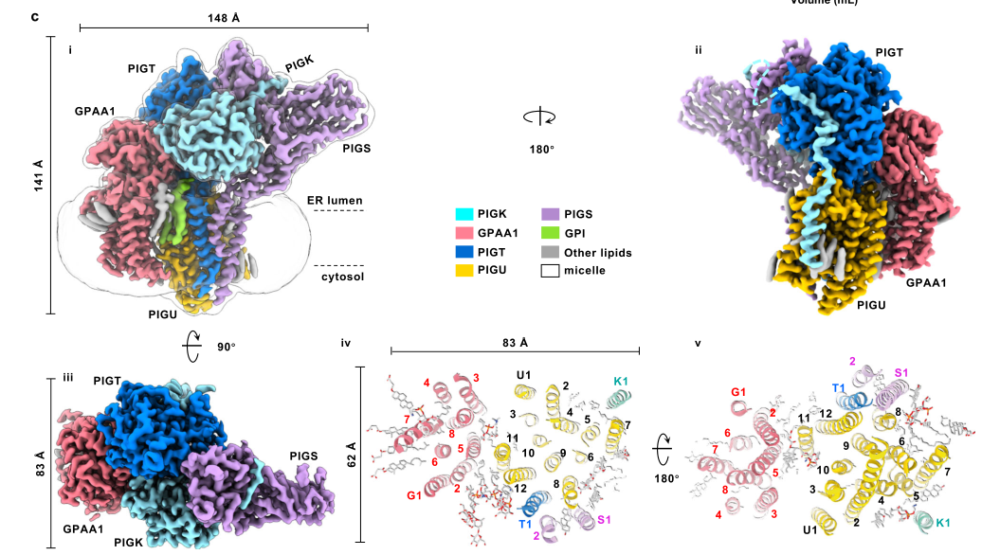

Essential subunit of the GPI-anchor transamidase complex (GPIT) in the endoplasmic reticulum. The complex catalyzes the terminal step of GPI anchor attachment, transferring preassembled GPI glycolipids to specific proteins at their C-terminal GPI-anchor signal sequence. Gaa1 contains a luminal domain with an M28 family metallopeptidase-like fold; while earlier work proposed this domain as the catalytic metallopeptide synthetase, the 2022 cryo-EM structure of the human complex assigns the catalytic cysteine protease to PIGK (Gpi8 ortholog) and supports a structural/substrate-positioning role for Gaa1, including substrate recruitment and GPI lipid recognition. The multi-pass transmembrane protein anchors the complex in the ER membrane and positions the catalytic machinery for GPI attachment. Direct S. pombe biochemical data are limited; functional assignments are strongly supported by orthology to the conserved Gaa1/GPAA1 family, in which a S. pombe ortholog is explicitly recognized.
| GO Term | Evidence | Action | Reason |
|---|---|---|---|
|
GO:0016255
attachment of GPI anchor to protein
|
IBA
GO_REF:0000033 |
ACCEPT |
Summary: This is the core biological process for gaa1. The protein is directly responsible for catalyzing the terminal step of GPI anchor attachment to proteins in the ER.
Supporting Evidence:
file:SCHPO/gaa1/gaa1-deep-research.md
Gaa1 is a core component of the GPI:protein transamidase (GPIT) enzyme complex that catalyzes the final step of GPI anchor attachment to proteins in the endoplasmic reticulum
file:SCHPO/gaa1/gaa1-deep-research-falcon.md
gaa1 encodes a **GPI transamidase component** (Gaa1/GPAA1 family) required for efficient **attachment of GPI anchors** to secretory proteins in the ER.
file:SCHPO/gaa1/gaa1-deep-research-falcon.md
Cross-species sequence analysis explicitly includes **a *Schizosaccharomyces pombe* Gaa1 ortholog** and shows conservation of the function-critical proline motif in the last TM segment, supporting that *S. pombe* gaa1/Q9US48 is a true family member with conserved mechanistic features.
|
|
GO:0042765
GPI-anchor transamidase complex
|
IBA
GO_REF:0000033 |
ACCEPT |
Summary: Core cellular component annotation. Gaa1 is an essential structural and substrate-positioning subunit of this five-protein complex.
Supporting Evidence:
file:SCHPO/gaa1/gaa1-deep-research.md
Gaa1 resides in the ER as an integral membrane protein and is a stable structural subunit of the GPIT enzyme complex (GO:0042765)
file:SCHPO/gaa1/gaa1-deep-research-falcon.md
Likely a core subunit of the **five-subunit GPI transamidase (GPIT/GPI-T)** with orthologs of PIGK/Gpi8, PIGT/Gpi16, PIGS/Gpi17, and PIGU/Gab1/Cdc91.
|
|
GO:0005789
endoplasmic reticulum membrane
|
IEA
GO_REF:0000044 |
ACCEPT |
Summary: Correct localization. Gaa1 is a multi-pass transmembrane protein anchored in the ER membrane where GPI attachment occurs.
Supporting Evidence:
file:SCHPO/gaa1/gaa1-deep-research.md
Gaa1 is an integral membrane glycoprotein of the ER. It is a multi-pass membrane protein embedded in the ER membrane as part of the GPIT complex
file:SCHPO/gaa1/gaa1-deep-research-falcon.md
Across systems where it has been experimentally studied, Gaa1/GPAA1 is a **multi-pass ER membrane glycoprotein**.
file:SCHPO/gaa1/gaa1-deep-research-falcon.md
the most defensible localization statement is **ER membrane**, inferred from conserved complex function and topology across eukaryotes.
|
|
GO:0006506
GPI anchor biosynthetic process
|
IEA
GO_REF:0000120 |
KEEP AS NON CORE |
Summary: This term is correct but less specific than GO:0016255 (attachment of GPI anchor to protein). Gaa1 functions in the terminal attachment step, which is part of the broader GPI anchor biosynthetic process. Falcon notes that this final transamidation step is the commitment step producing a mature GPI-anchored protein.
Supporting Evidence:
file:SCHPO/gaa1/gaa1-deep-research-falcon.md
This reaction occurs in the **endoplasmic reticulum (ER)** and is described as the final “commitment” step that produces a mature GPI-anchored protein.
|
|
GO:0016020
membrane
|
IEA
GO_REF:0000002 |
REMOVE |
Summary: Too generic. The more specific term GO:0005789 (endoplasmic reticulum membrane) is already present and should be used instead.
|
|
GO:0042765
GPI-anchor transamidase complex
|
IEA
GO_REF:0000002 |
REMOVE |
Summary: Duplicate of the IBA annotation for the same term. Accept one, remove this duplicate.
|
|
GO:0005789
endoplasmic reticulum membrane
|
NAS
PMID:15003443 A sensitive predictor for potential GPI lipid modification s... |
REMOVE |
Summary: Duplicate of the IEA annotation for the same term. Accept one, remove this duplicate.
Supporting Evidence:
PMID:15003443
A sensitive predictor for potential GPI lipid modification sites in fungal protein sequences and its application to genome-wide studies for Aspergillus nidulans, Candida albicans, Neurospora crassa, Saccharomyces cerevisiae and Schizosaccharomyces pombe.
|
|
GO:0016255
attachment of GPI anchor to protein
|
NAS
PMID:15003443 A sensitive predictor for potential GPI lipid modification s... |
REMOVE |
Summary: Duplicate of the IBA annotation for the same term. Accept one, remove this duplicate.
Supporting Evidence:
PMID:15003443
A sensitive predictor for potential GPI lipid modification sites in fungal protein sequences and its application to genome-wide studies for Aspergillus nidulans, Candida albicans, Neurospora crassa, Saccharomyces cerevisiae and Schizosaccharomyces pombe.
|
|
GO:0031505
fungal-type cell wall organization
|
NAS
PMID:15003443 A sensitive predictor for potential GPI lipid modification s... |
MARK AS OVER ANNOTATED |
Summary: While GPI-anchored proteins contribute to cell wall organization in fungi, this is an indirect downstream effect. The direct function of gaa1 is GPI anchor attachment, not cell wall organization itself; this annotation overshoots the gene's direct role and is marked as over-annotated.
Supporting Evidence:
file:SCHPO/gaa1/gaa1-deep-research.md
In S. pombe (and other fungi), numerous cell wall enzymes and adhesins are GPI-anchored; therefore, Gaa1 is indirectly critical for cell wall assembly and integrity
PMID:15003443
A sensitive predictor for potential GPI lipid modification sites in fungal protein sequences and its application to genome-wide studies for Aspergillus nidulans, Candida albicans, Neurospora crassa, Saccharomyces cerevisiae and Schizosaccharomyces pombe.
file:SCHPO/gaa1/gaa1-deep-research-falcon.md
In yeast and fungal systems, GPI anchoring is a major contributor to **cell wall protein display** and surface proteome composition.
|
|
GO:0042765
GPI-anchor transamidase complex
|
NAS
PMID:15003443 A sensitive predictor for potential GPI lipid modification s... |
REMOVE |
Summary: Duplicate of the IBA annotation for the same term. Accept one, remove this duplicate.
Supporting Evidence:
PMID:15003443
A sensitive predictor for potential GPI lipid modification sites in fungal protein sequences and its application to genome-wide studies for Aspergillus nidulans, Candida albicans, Neurospora crassa, Saccharomyces cerevisiae and Schizosaccharomyces pombe.
|
|
GO:0003923
GPI-anchor transamidase activity
|
TAS
PMID:26563290 Biosynthesis of GPI-anchored proteins: special emphasis on G... |
ACCEPT |
Summary: Core molecular function. GO:0003923 is the complex-level catalytic
activity of the GPI transamidase complex that gaa1 is part of, and the
annotation is retained as core for gaa1 as a subunit. Note on
mechanism: earlier modeling (Eisenhaber 2014; Su 2020) proposed that the
M28-family-like luminal domain of Gaa1/GPAA1 is itself the
peptide-bond-forming metallopeptide synthetase. Falcon deep research
flags that this has been revised by the 2022 near-atomic cryo-EM
structure of human GPI-T, which assigns the catalytic cysteine protease
to PIGK (the Gpi8 ortholog) and indicates Gaa1/GPAA1 is more likely a
structural/substrate-positioning subunit contributing to substrate
recruitment and GPI lipid recognition rather than the principal
catalyst. The complex-level GO:0003923 annotation remains appropriate
for gaa1 as an essential subunit, but it should not be read as asserting
that Gaa1 alone performs the peptide-bond chemistry.
Supporting Evidence:
file:SCHPO/gaa1/gaa1-deep-research.md
structural and bioinformatic studies revealed that Gaa1's luminal domain is homologous to M28 family metallo-peptidases, suggesting that Gaa1 itself is the enzyme that catalyzes the second step of the transamidation
PMID:26563290
Biosynthesis of GPI-anchored proteins: special emphasis on GPI lipid remodeling.
PMID:35551457
Structure-based mutagenesis suggests a legumain-like mechanism for the recognition and cleavage of proprotein substrates, and an endogenous GPI in the structure defines a composite cavity for the lipid substrate.
file:SCHPO/gaa1/gaa1-deep-research-falcon.md
In the literature, the **precise catalytic assignment** for GPAA1/Gaa1 has evolved. A 2022 near-atomic cryo-EM structure of human GPI-T supports **PIGK** as the catalytic cysteine protease (with an essential catalytic dyad) and provides evidence that GPAA1’s luminal domain—despite a protease-like fold—may be more **structural/substrate-positioning** rather than the main catalytic center (based on mutagenesis and a cell-surface CD59 reporter assay).
file:SCHPO/gaa1/gaa1-deep-research-falcon.md
proproteins can bind Gaa1 even when the catalytic subunit Gpi8/PIGK is absent, consistent with a **substrate-recruitment** role for Gaa1.
file:SCHPO/gaa1/gaa1-deep-research-falcon.md
The last transmembrane segment of Gaa1 is implicated in **GPI recognition**: truncations and point mutations (including a conserved proline) disrupt GPI co-precipitation while preserving assembly and proprotein binding, indicating a role in binding/presenting the lipid substrate.
|
|
GO:0005783
endoplasmic reticulum
|
HDA
PMID:16823372 ORFeome cloning and global analysis of protein localization ... |
KEEP AS NON CORE |
Summary: Correct but less specific than GO:0005789 (endoplasmic reticulum membrane). Since gaa1 is a transmembrane protein, the membrane term is more accurate.
Supporting Evidence:
PMID:16823372
ORFeome cloning and global analysis of protein localization in the fission yeast Schizosaccharomyces pombe.
|
Exported on March 22, 2026 at 12:43 AM
Organism: Schizosaccharomyces pombe
Sequence:
MSLFTFVQIRVFPFLQRHLFFLQLSLTLIGLSWIFILPRNEIIDRLHVSESALLPGQVNTYFENRYSKTVSSSLTAANTWSHLDASVGTNTMYDDLEQIFTAMGLPTQKQNYSINIPGSEFNGSNFITTLRAPRGDATESLLLCVPWKDHIGQYNEAGVALAISLLKYFQGWSLWSKDIILVIFDDPVYGPSSFLTSYFDQTTPYISYTPLKIRSGSIQAGLSLELVTTENNSDVLEVLYQATNGQLPNLDLFNTISRIFMQHFNYPLRLQGYDFHANSGSSYTSRLKSLWMGMLTQAVSNVTSAHALFPQYRIDMLTLRMKVKDPFSFDMFRFGQAIESTFRSLNNLLEHLHQSFFFYFILDHLHFISIGNYMPSILILAASFMLGAYRHWINHEKKIDLWRPFSFWLFSIFCTIAAYYLVSSSTKITVFIFLYLMLTFIGIIFSTFMTSEDAELVLSYDLMSKSLFISVVSTLNFSLSFVVAILLVPLQFISFRFNRRLSLLFAVLTYFSTFIFLCSLSKILNGPLVPFWLWAKEYELFNSWLMPSVFMILVLPEIIFSVTSFFSLWNEPSVKTKTKTL
I begin with the domain architecture. The sequence is dominated by IPR007246 (GPI transamidase component Gaa1 family), spanning residues 6–577 and covering essentially the entire polypeptide. A single, expansive family signature that occupies nearly the full length indicates a dedicated, non-catalytic scaffold or adaptor that assembles and stabilizes the glycosylphosphatidylinositol (GPI) transamidase machinery. In eukaryotes, this Gaa1-type component nucleates the complex that performs the hallmark transamidation step of GPI anchor attachment. The absence of additional catalytic domains and the breadth of the family signature together argue that the protein’s primary role is to organize other enzymatic subunits and present substrates rather than to perform chemistry directly.
From this architecture, the molecular function is driven by multivalent assembly and substrate-handling capacity. The Gaa1 family is known to coordinate the spatial arrangement of the catalytic core and accessory subunits that cleave C-terminal propeptides and transfer GPI anchors. Such a scaffolded arrangement causes efficient substrate capture and positioning but does not itself define a discrete catalytic activity. Therefore, the most defensible molecular function is protein binding (GO:0005515), reflecting its role in complex assembly and partner recognition.
This binding-driven assembly directly feeds into the biological process of GPI anchor installation. By organizing the GPI transamidase, the protein enables covalent attachment of GPI anchors to nascent secretory pathway proteins—an essential branch of post-translational maturation. This places the protein squarely in the pathway formalized as glycosylphosphatidylinositol anchor attachment (GO:0016255). The mechanistic consequence of this assembly is the efficient and accurate handoff between proteolysis and transamidation that commits cargo proteins to downstream trafficking and cell-surface/endoplasmic reticulum (ER) membrane residency.
Cellular localization follows from the assembly site of GPI biogenesis. The GPI transamidase operates on lumenal faces of ER-associated complexes where secretory cargo is processed. A soluble scaffold that organizes the transamidase must itself reside within the ER environment. Thus, the cellular component is the endoplasmic reticulum (GO:0005783), consistent with an ER-associated maturation hub rather than a soluble cytosolic pool.
Putting these elements together suggests a mechanistic hypothesis: the Gaa1-type scaffold forms a platform that recruits and stabilizes the catalytic core and accessory factors of the GPI transamidase, aligning the catalytic histidine-containing subunit with substrates bearing C-terminal GPI-attachment signals. By binding partner proteins and positioning the complex at the ER, it ensures high local concentration of substrates and cofactors, thereby accelerating GPI anchor transfer and enforcing fidelity of membrane protein maturation. Likely interaction partners include other transamidase subunits and ER-resident assembly factors that collectively execute the transamidation reaction and maintain complex integrity.
An ER-associated assembly factor that organizes the GPI anchor attachment machinery in fission yeast. It acts as a scaffold/adaptor for the transamidase complex, binding partner subunits to position secretory pathway substrates for covalent GPI-anchor installation. By stabilizing and spatially coordinating the catalytic core and accessory components at the ER, it drives efficient post-translational maturation of membrane proteins that enter the secretory pathway.
Component of the GPI transamidase complex.
IPR007246, family) — residues 6-577Molecular Function: molecular_function (GO:0003674), catalytic activity (GO:0003824), catalytic activity, acting on a protein (GO:0140096), hydrolase activity (GO:0016787), peptidase activity (GO:0008233), cysteine-type peptidase activity (GO:0008234), endopeptidase activity (GO:0004175), cysteine-type endopeptidase activity (GO:0004197)
Biological Process: biological_process (GO:0008150), metabolic process (GO:0008152), cellular process (GO:0009987), biosynthetic process (GO:0009058), cellular metabolic process (GO:0044237), nitrogen compound metabolic process (GO:0006807), organic substance metabolic process (GO:0071704), primary metabolic process (GO:0044238), organic substance biosynthetic process (GO:1901576), organonitrogen compound metabolic process (GO:1901564), lipid metabolic process (GO:0006629), protein metabolic process (GO:0019538), organophosphate metabolic process (GO:0019637), cellular lipid metabolic process (GO:0044255), cellular biosynthetic process (GO:0044249), cellular macromolecule metabolic process (GO:0044260), macromolecule metabolic process (GO:0043170), carbohydrate derivative metabolic process (GO:1901135), phosphorus metabolic process (GO:0006793), protein modification process (GO:0036211), organonitrogen compound biosynthetic process (GO:1901566), macromolecule biosynthetic process (GO:0009059), macromolecule modification (GO:0043412), glycerolipid metabolic process (GO:0046486), phospholipid metabolic process (GO:0006644), membrane lipid metabolic process (GO:0006643), organophosphate biosynthetic process (GO:0090407), liposaccharide metabolic process (GO:1903509), phosphate-containing compound metabolic process (GO:0006796), cellular macromolecule biosynthetic process (GO:0034645), carbohydrate derivative biosynthetic process (GO:1901137), membrane lipid biosynthetic process (GO:0046467), lipoprotein metabolic process (GO:0042157), lipid biosynthetic process (GO:0008610), glycerolipid biosynthetic process (GO:0045017), glycerophospholipid metabolic process (GO:0006650), lipoprotein biosynthetic process (GO:0042158), protein lipidation (GO:0006497), phospholipid biosynthetic process (GO:0008654), glycolipid metabolic process (GO:0006664), glycerophospholipid biosynthetic process (GO:0046474), glycolipid biosynthetic process (GO:0009247), GPI anchor biosynthetic process (GO:0006506), phosphatidylinositol biosynthetic process (GO:0006661), GPI anchor metabolic process (GO:0006505), phosphatidylinositol metabolic process (GO:0046488)
Cellular Component: cellular_component (GO:0005575), cellular anatomical entity (GO:0110165), intracellular anatomical structure (GO:0005622), organelle (GO:0043226), cytoplasm (GO:0005737), endomembrane system (GO:0012505), intracellular organelle (GO:0043229), endoplasmic reticulum (GO:0005783), membrane-bounded organelle (GO:0043227), intracellular membrane-bounded organelle (GO:0043231)
Generated by BioReason
Exported on March 22, 2026 at 12:43 AM
Organism: Schizosaccharomyces pombe
Sequence:
MSLFTFVQIRVFPFLQRHLFFLQLSLTLIGLSWIFILPRNEIIDRLHVSESALLPGQVNTYFENRYSKTVSSSLTAANTWSHLDASVGTNTMYDDLEQIFTAMGLPTQKQNYSINIPGSEFNGSNFITTLRAPRGDATESLLLCVPWKDHIGQYNEAGVALAISLLKYFQGWSLWSKDIILVIFDDPVYGPSSFLTSYFDQTTPYISYTPLKIRSGSIQAGLSLELVTTENNSDVLEVLYQATNGQLPNLDLFNTISRIFMQHFNYPLRLQGYDFHANSGSSYTSRLKSLWMGMLTQAVSNVTSAHALFPQYRIDMLTLRMKVKDPFSFDMFRFGQAIESTFRSLNNLLEHLHQSFFFYFILDHLHFISIGNYMPSILILAASFMLGAYRHWINHEKKIDLWRPFSFWLFSIFCTIAAYYLVSSSTKITVFIFLYLMLTFIGIIFSTFMTSEDAELVLSYDLMSKSLFISVVSTLNFSLSFVVAILLVPLQFISFRFNRRLSLLFAVLTYFSTFIFLCSLSKILNGPLVPFWLWAKEYELFNSWLMPSVFMILVLPEIIFSVTSFFSLWNEPSVKTKTKTL
I begin with the domain architecture. The sequence is dominated by IPR007246 (GPI transamidase component Gaa1 family), spanning residues 6–577 and covering essentially the entire polypeptide. A single, expansive family signature that occupies nearly the full length indicates a dedicated, non-catalytic scaffold or adaptor that assembles and stabilizes the glycosylphosphatidylinositol (GPI) transamidase machinery. In eukaryotes, this Gaa1-type component nucleates the complex that performs the hallmark transamidation step of GPI anchor attachment. The absence of additional catalytic domains and the breadth of the family signature together argue that the protein’s primary role is to organize other enzymatic subunits and present substrates rather than to perform chemistry directly.
From this architecture, the molecular function is driven by multivalent assembly and substrate-handling capacity. The Gaa1 family is known to coordinate the spatial arrangement of the catalytic core and accessory subunits that cleave C-terminal propeptides and transfer GPI anchors. Such a scaffolded arrangement causes efficient substrate capture and positioning but does not itself define a discrete catalytic activity. Therefore, the most defensible molecular function is protein binding (GO:0005515), reflecting its role in complex assembly and partner recognition.
This binding-driven assembly directly feeds into the biological process of GPI anchor installation. By organizing the GPI transamidase, the protein enables covalent attachment of GPI anchors to nascent secretory pathway proteins—an essential branch of post-translational maturation. This places the protein squarely in the pathway formalized as glycosylphosphatidylinositol anchor attachment (GO:0016255). The mechanistic consequence of this assembly is the efficient and accurate handoff between proteolysis and transamidation that commits cargo proteins to downstream trafficking and cell-surface/endoplasmic reticulum (ER) membrane residency.
Cellular localization follows from the assembly site of GPI biogenesis. The GPI transamidase operates on lumenal faces of ER-associated complexes where secretory cargo is processed. A soluble scaffold that organizes the transamidase must itself reside within the ER environment. Thus, the cellular component is the endoplasmic reticulum (GO:0005783), consistent with an ER-associated maturation hub rather than a soluble cytosolic pool.
Putting these elements together suggests a mechanistic hypothesis: the Gaa1-type scaffold forms a platform that recruits and stabilizes the catalytic core and accessory factors of the GPI transamidase, aligning the catalytic histidine-containing subunit with substrates bearing C-terminal GPI-attachment signals. By binding partner proteins and positioning the complex at the ER, it ensures high local concentration of substrates and cofactors, thereby accelerating GPI anchor transfer and enforcing fidelity of membrane protein maturation. Likely interaction partners include other transamidase subunits and ER-resident assembly factors that collectively execute the transamidation reaction and maintain complex integrity.
An ER-associated assembly factor that organizes the GPI anchor attachment machinery in fission yeast. It acts as a scaffold/adaptor for the transamidase complex, binding partner subunits to position secretory pathway substrates for covalent GPI-anchor installation. By stabilizing and spatially coordinating the catalytic core and accessory components at the ER, it drives efficient post-translational maturation of membrane proteins that enter the secretory pathway.
Component of the GPI transamidase complex.
IPR007246, family) — residues 6-577Molecular Function: molecular_function (GO:0003674), catalytic activity (GO:0003824), catalytic activity, acting on a protein (GO:0140096), hydrolase activity (GO:0016787), peptidase activity (GO:0008233), cysteine-type peptidase activity (GO:0008234), endopeptidase activity (GO:0004175), cysteine-type endopeptidase activity (GO:0004197)
Biological Process: biological_process (GO:0008150), metabolic process (GO:0008152), cellular process (GO:0009987), biosynthetic process (GO:0009058), cellular metabolic process (GO:0044237), nitrogen compound metabolic process (GO:0006807), organic substance metabolic process (GO:0071704), primary metabolic process (GO:0044238), organic substance biosynthetic process (GO:1901576), organonitrogen compound metabolic process (GO:1901564), lipid metabolic process (GO:0006629), protein metabolic process (GO:0019538), organophosphate metabolic process (GO:0019637), cellular lipid metabolic process (GO:0044255), cellular biosynthetic process (GO:0044249), cellular macromolecule metabolic process (GO:0044260), macromolecule metabolic process (GO:0043170), carbohydrate derivative metabolic process (GO:1901135), phosphorus metabolic process (GO:0006793), protein modification process (GO:0036211), organonitrogen compound biosynthetic process (GO:1901566), macromolecule biosynthetic process (GO:0009059), macromolecule modification (GO:0043412), glycerolipid metabolic process (GO:0046486), phospholipid metabolic process (GO:0006644), membrane lipid metabolic process (GO:0006643), organophosphate biosynthetic process (GO:0090407), liposaccharide metabolic process (GO:1903509), phosphate-containing compound metabolic process (GO:0006796), cellular macromolecule biosynthetic process (GO:0034645), carbohydrate derivative biosynthetic process (GO:1901137), membrane lipid biosynthetic process (GO:0046467), lipoprotein metabolic process (GO:0042157), lipid biosynthetic process (GO:0008610), glycerolipid biosynthetic process (GO:0045017), glycerophospholipid metabolic process (GO:0006650), lipoprotein biosynthetic process (GO:0042158), protein lipidation (GO:0006497), phospholipid biosynthetic process (GO:0008654), glycolipid metabolic process (GO:0006664), glycerophospholipid biosynthetic process (GO:0046474), glycolipid biosynthetic process (GO:0009247), GPI anchor biosynthetic process (GO:0006506), phosphatidylinositol biosynthetic process (GO:0006661), GPI anchor metabolic process (GO:0006505), phosphatidylinositol metabolic process (GO:0046488)
Cellular Component: cellular_component (GO:0005575), cellular anatomical entity (GO:0110165), intracellular anatomical structure (GO:0005622), organelle (GO:0043226), cytoplasm (GO:0005737), endomembrane system (GO:0012505), intracellular organelle (GO:0043229), endoplasmic reticulum (GO:0005783), membrane-bounded organelle (GO:0043227), intracellular membrane-bounded organelle (GO:0043231)
Generated by BioReason
The research report should be a detailed narrative explaining the function, biological processes, and localization of the gene product. Citations should be given for all claims.
You should prioritize authoritative reviews and primary scientific literature when conducting research. You can supplement
this with annotations you find in gene/protein databases, but these can be outdated or inaccurate.
We are specifically interested in the primary function of the gene - for enzymes, what reaction is catalyzed, and what is the substrate specificity? For transporters, what is the substrate? For structural proteins or adapters, what is the broader structural role? For signaling molecules, what is the role in the pathway.
We are interested in where in or outside the cell the gene product carries out its function.
We are also interested in the signaling or biochemical pathways in which the gene functions. We are less interested in broad pleiotropic effects, except where these elucidate the precise role.
Include evidence where possible. We are interested in both experimental evidence as well as inference from structure, evolution, or bioinformatic analysis. Precise studies should be prioritized over high-throughput, where available.
The UniProt target Q9US48 (gaa1; SPAC1002.11) is annotated as “GPI transamidase component Gaa1” in Schizosaccharomyces pombe (strain 972). Direct S. pombe-specific biochemical/genetic literature for SPAC1002.11 was not retrieved in the accessible full-text corpus; therefore, species-specific functional statements are necessarily inferred by orthology to the conserved Gaa1/GPAA1 family, with explicit supporting evidence that a S. pombe Gaa1 ortholog is recognized in cross-species comparisons of function-critical motifs. Specifically, a cross-species alignment of the last transmembrane helix of Gaa1 orthologs explicitly includes Schizosaccharomyces pombe and highlights a conserved proline motif required for GPI recognition in the transamidase complex. (vainauskas2004aconservedproline pages 4-5)
GPI anchoring is a conserved eukaryotic post-translational modification that converts a secretory-pathway protein (a “preproprotein”) into a membrane-tethered protein by attaching a preassembled glycolipid (GPI) to the protein’s C-terminus. In the canonical reaction, GPI transamidase (GPI-T/GPIT) recognizes a C-terminal GPI signal sequence, cleaves the protein at the ω-site (the future C-terminus), and replaces the signal peptide with a GPI anchor, creating an amide (peptide) bond between the protein’s new C-terminal carboxyl at the ω-residue and an amine on the GPI anchor (commonly described as a terminal ethanolamine/phosphoethanolamine group). (vainauskas2002structuralrequirementsfor pages 1-1, gamage2013gpitransamidaseand pages 3-5, vainauskas2004aconservedproline pages 1-1)
This reaction occurs in the endoplasmic reticulum (ER) and is described as the final “commitment” step that produces a mature GPI-anchored protein. (vainauskas2002structuralrequirementsfor pages 1-1, gamage2013gpitransamidaseand pages 3-5)
Gaa1 (yeast nomenclature) / GPAA1 (metazoan nomenclature) is a conserved, multi-pass ER membrane component of GPI transamidase. Structure-function analyses in mammalian systems characterize Gaa1 as an ER-localized membrane glycoprotein with cytosolic N-terminus and luminal C-terminus, and a large luminal region critical for association with other GPI-T subunits. (vainauskas2002structuralrequirementsfor pages 1-1)
A key functional theme for Gaa1/GPAA1 across systems is coupling substrate recognition and GPI (lipid) recognition/presentation to the catalytic reaction performed by the transamidase complex. (vainauskas2002structuralrequirementsfor pages 1-1, vainauskas2004aconservedproline pages 1-1)
GPI transamidase recognizes a C-terminal signal with characteristic features: a short region surrounding the ω-site, a hydrophilic spacer, and a hydrophobic C-terminal tail. The ω-site (attachment residue) tends to be a small side chain; constraints at ω+1 and ω+2 are also strong (e.g., ω+2 often small), sometimes described as a “small amino acid domain.” (xu2022molecularinsightsinto pages 2-4, gamage2013gpitransamidaseand pages 3-5, vainauskas2004aconservedproline pages 1-1)
One mechanistic synthesis argues “only residues Ala, Asn, Asp, Cys, Gly, and Ser” are possible at the ω-site in typical substrates. (eisenhaber2014transamidasesubunitgaa1gpaa1 pages 2-4, eisenhaber2014transamidasesubunitgaa1gpaa1 pages 4-5)
Best-supported functional assignment (orthology-based): gaa1 encodes a GPI transamidase component (Gaa1/GPAA1 family) required for efficient attachment of GPI anchors to secretory proteins in the ER.
Evidence basis:
- GPI transamidase chemistry and the role of Gaa1-family proteins in substrate interactions are experimentally supported in mammalian systems: proproteins can bind Gaa1 even when the catalytic subunit Gpi8/PIGK is absent, consistent with a substrate-recruitment role for Gaa1. (vainauskas2002structuralrequirementsfor pages 1-1)
- The last transmembrane segment of Gaa1 is implicated in GPI recognition: truncations and point mutations (including a conserved proline) disrupt GPI co-precipitation while preserving assembly and proprotein binding, indicating a role in binding/presenting the lipid substrate. (vainauskas2004aconservedproline pages 1-1)
- Cross-species sequence analysis explicitly includes a Schizosaccharomyces pombe Gaa1 ortholog and shows conservation of the function-critical proline motif in the last TM segment, supporting that S. pombe gaa1/Q9US48 is a true family member with conserved mechanistic features. (vainauskas2004aconservedproline pages 4-5)
Important nuance / current uncertainty: In the literature, the precise catalytic assignment for GPAA1/Gaa1 has evolved. A 2022 near-atomic cryo-EM structure of human GPI-T supports PIGK as the catalytic cysteine protease (with an essential catalytic dyad) and provides evidence that GPAA1’s luminal domain—despite a protease-like fold—may be more structural/substrate-positioning rather than the main catalytic center (based on mutagenesis and a cell-surface CD59 reporter assay). (xu2022molecularinsightsinto pages 2-4, xu2022molecularinsightsinto pages 7-9)
Accordingly, for S. pombe gaa1/Q9US48, the most conservative functional annotation is: structural/recognition subunit of the ER GPI transamidase complex required for GPI-anchor attachment, likely contributing to substrate recruitment and/or GPI lipid engagement rather than being the protease that cleaves the signal peptide. (vainauskas2002structuralrequirementsfor pages 1-1, vainauskas2004aconservedproline pages 1-1, xu2022molecularinsightsinto pages 7-9)
The GPI transamidase complex catalyzes:
1) cleavage of the precursor’s C-terminal GPI signal peptide at the ω-site, forming an enzyme–substrate intermediate, and
2) nucleophilic attack by GPI to yield a product in which the ω-site residue becomes the C-terminal residue, linked by an amide bond to the GPI ethanolamine/phosphoethanolamine. (vainauskas2004aconservedproline pages 1-1, vainauskas2002structuralrequirementsfor pages 1-1)
Substrate constraints include a preference for small ω-site residues and strong constraints at ω+1/ω+2, plus a hydrophilic spacer and hydrophobic tail downstream. (xu2022molecularinsightsinto pages 2-4, gamage2013gpitransamidaseand pages 3-5, vainauskas2004aconservedproline pages 1-1)
For Gaa1/GPAA1 specifically, experimental and mechanistic studies support roles in substrate recognition and GPI recognition (see above), i.e., it contributes to the complex’s effective substrate processing and lipid engagement rather than defining a classic enzyme-substrate reaction on its own. (vainauskas2002structuralrequirementsfor pages 1-1, vainauskas2004aconservedproline pages 1-1)
Across systems where it has been experimentally studied, Gaa1/GPAA1 is a multi-pass ER membrane glycoprotein. In a detailed mammalian analysis, Gaa1 is ER-localized, with a cytosolic N-terminus and luminal C-terminus, and with a large luminal region important for interactions with other GPI-T subunits. (vainauskas2002structuralrequirementsfor pages 1-1)
A 2022 cryo-EM structure of human GPI-T shows the complex partitioned into a luminal domain and a transmembrane domain, with GPAA1 contributing a substantial portion of the membrane-embedded scaffold (an eight-transmembrane-helix entity in the model). (xu2022molecularinsightsinto pages 2-4)
For S. pombe gaa1/Q9US48, the most defensible localization statement is ER membrane, inferred from conserved complex function and topology across eukaryotes. (vainauskas2002structuralrequirementsfor pages 1-1, xu2022molecularinsightsinto pages 2-4)
The major recent step-change for understanding GPI transamidase is the 2.53 Å cryo-EM structure of the human GPI-T complex, revealing an equimolar heteropentameric organization and providing extensive mutational validation of catalytic and binding determinants. (xu2022molecularinsightsinto pages 2-4, xu2022molecularinsightsinto pages 1-2)
Key quantitative details from this work include: resolution 2.53 Å, near-complete model (2,393 residues, 94.4% complete), and a transmembrane domain comprising 24 TM helices with GPAA1 contributing an eight-TMH module; a ~22 Å elongated cavity spans from the membrane toward the catalytic dyad, supporting a geometry-based model for accommodating both amphipathic protein and lipid substrates. (xu2022molecularinsightsinto pages 2-4, xu2022molecularinsightsinto pages 1-2)
This structure also provided functional assay readouts (e.g., substitutions that abolish activity or reduce to ~10% for a key pocket mutation in the catalytic subunit) and suggested that GPAA1 is less likely to be the principal catalytic site in the human enzyme (based on mutational tolerance in the assay). (xu2022molecularinsightsinto pages 2-4, xu2022molecularinsightsinto pages 7-9)
A 2024 Nature Communications study links ER-associated degradation (ERAD) via the SEL1L–HRD1 complex to GPI-anchored protein biogenesis by identifying PIGK (the catalytic subunit of GPI-T) as a prominent ERAD substrate and showing that ERAD attenuates GPI-anchored protein production by targeting PIGK for proteasomal degradation. (wei2024proteomicscreensof pages 1-2)
Quantitative/statistical highlights from the 2024 work include:
- >100 high-confidence ERAD substrates identified (after machine-learning filtering) across HEK293T cells and mouse brown adipose tissue, with ~88% being cell-type specific. (wei2024proteomicscreensof pages 1-2)
- In one dataset: 55 SEL1L interactors; among putative substrates, 61% membrane proteins, 69% glycosylated, and 31% with disulfide bonds—consistent with surveillance of secretory-pathway proteins and complexes such as GPI-T. (wei2024proteomicscreensof pages 2-3)
While not S. pombe-specific, this work reframes GPI-anchor attachment as a pathway whose throughput can be controlled by protein quality-control systems acting on transamidase subunits; by orthology, similar logic may apply in fungi, although direct evidence would be required for S. pombe. (wei2024proteomicscreensof pages 1-2)
GPI anchoring is central to the cell-surface display of many proteins. For example, the 2024 ERAD study reiterates that there are >150 human GPI-anchored proteins, emphasizing the breadth of pathway impact. (wei2024proteomicscreensof pages 1-2)
In clinical genetics and cell biology, disruptions of GPI transamidase components and GPI biosynthesis are widely connected to human disease; the 2024 work notes that many genetic variants in transamidase components are associated with neurodevelopmental disorders and demonstrates ERAD handling of disease variants in PIGK. (wei2024proteomicscreensof pages 2-3, wei2024proteomicscreensof pages 1-2)
In yeast and fungal systems, GPI anchoring is a major contributor to cell wall protein display and surface proteome composition. Therefore, GPI-transamidase components (including Gaa1 family proteins) are used implicitly in:
- engineered display of proteins on the cell surface (requiring functional GPI attachment machinery), and
- functional genomics screens of secretory pathway/cell wall integrity (GPI anchoring is a frequent node of sensitivity).
Although the accessible corpus here did not provide S. pombe-specific implementations for SPAC1002.11, the conserved essential role of the pathway in anchoring suggests that gaa1 disruption would be expected to broadly affect GPI-anchored protein maturation and downstream cell surface/cell wall processes (hypothesis; would require direct S. pombe validation). (vainauskas2002structuralrequirementsfor pages 1-1, gamage2013gpitransamidaseand pages 3-5)
Older mechanistic syntheses and modeling papers proposed that GAA1/GPAA1 is the key enzymatic subunit catalyzing the peptide-bond formation between the ω-site and phosphoethanolamine and emphasized a metalloenzyme-like luminal domain. (eisenhaber2014transamidasesubunitgaa1gpaa1 pages 4-5, su2020structuralmodellingof pages 1-2)
In contrast, the near-atomic structure and mutagenesis from 2022 provide strong evidence placing proteolytic and transamidation catalysis at the PIGK active site (cysteine protease-like), while supporting GPAA1 as more of a scaffold/substrate-positioning and membrane-embedded organizing unit, with functional importance in building the composite substrate/lipid-binding environment. (xu2022molecularinsightsinto pages 2-4, xu2022molecularinsightsinto pages 7-9)
For functional annotation of S. pombe gaa1/Q9US48, the best practice is therefore to phrase Gaa1’s role as required component of ER GPI transamidase, likely contributing to substrate recruitment and/or GPI recognition, rather than asserting sole catalytic responsibility for peptide-bond formation. (vainauskas2002structuralrequirementsfor pages 1-1, vainauskas2004aconservedproline pages 1-1, xu2022molecularinsightsinto pages 7-9)
The most defensible conserved features (supported by cross-species evidence and conserved complex biology) are:
- ER localization and multi-pass membrane nature of Gaa1-family proteins (vainauskas2002structuralrequirementsfor pages 1-1)
- involvement in GPI recognition/presentation via the last TM segment, including a conserved proline motif (vainauskas2004aconservedproline pages 1-1)
- existence of a S. pombe ortholog in the conserved family bearing the motif (vainauskas2004aconservedproline pages 4-5)
The following table consolidates direct evidence and clearly marks where S. pombe claims are orthology-based.
| Claim/Topic | Organism/System | Key finding | Quantitative details | Evidence type | Citation (include DOI URL and publication date) |
|---|---|---|---|---|---|
| S. pombe gaa1/Q9US48 identity | Schizosaccharomyces pombe (in multispecies alignment) | A Gaa1 ortholog from S. pombe is explicitly included in cross-species alignment of the last TM segment; the family-defining conserved proline linked to GPI recognition is present, supporting that Q9US48/gaa1 belongs to the Gaa1/GPAA1 GPI-transamidase family. | Conserved proline in a GXXP/GXP-like motif in the last TM segment. | Comparative sequence conservation; family inference | Vainauskas & Menon, 2004-02, JBC, DOI: https://doi.org/10.1074/jbc.M312191200 (vainauskas2004aconservedproline pages 4-5) |
| S. pombe gaa1/Q9US48 function (inferred) | S. pombe gaa1 / UniProt Q9US48 | Best-supported annotation is GPI transamidase component Gaa1, involved in attachment of a preassembled GPI anchor to precursor proteins after C-terminal signal processing. Direct S. pombe-specific biochemical evidence was not retrieved, so this is inferred from strong orthology/family conservation. | No direct S. pombe kinetic data retrieved. | Orthology-based functional inference from conserved GPIT subunit family | Conserved-family evidence summarized from Gaa1/GPAA1 studies (vainauskas2002structuralrequirementsfor pages 1-1, vainauskas2004aconservedproline pages 4-5, hong2003humanpiguand pages 9-10) |
| S. pombe gaa1/Q9US48 localization (inferred) | S. pombe gaa1 / eukaryotic Gaa1 family | Likely an ER membrane protein with a large luminal domain, because Gaa1/GPAA1 is ER-localized across experimentally studied systems and functions in the ER-resident GPI transamidase complex. | Human GPAA1/Gaa1 studied as multi-pass membrane glycoprotein; 7 TM spans in 2002 work, 8 TMHs in 2022 cryo-EM model. | Inference from conserved topology and complex localization | Vainauskas et al., 2002-08, JBC, DOI: https://doi.org/10.1074/jbc.M205402200; Xu et al., 2022-05, Nat Commun, DOI: https://doi.org/10.1038/s41467-022-30250-6 (vainauskas2002structuralrequirementsfor pages 1-1, xu2022molecularinsightsinto pages 2-4, xu2022molecularinsightsinto media f6d12197) |
| S. pombe gaa1/Q9US48 complex membership (inferred) | S. pombe gaa1 / eukaryotic GPIT | Likely a core subunit of the five-subunit GPI transamidase (GPIT/GPI-T) with orthologs of PIGK/Gpi8, PIGT/Gpi16, PIGS/Gpi17, and PIGU/Gab1/Cdc91. | Human structure resolved a 1:1:1:1:1 heteropentamer. | Orthology/family inference supported by conserved complex architecture | Ohishi et al., 2000-05, Mol Biol Cell, DOI: https://doi.org/10.1091/mbc.11.5.1523; Xu et al., 2022-05, Nat Commun, DOI: https://doi.org/10.1038/s41467-022-30250-6 (xu2022molecularinsightsinto pages 2-4, hong2003humanpiguand pages 9-10) |
| 2002 structural role of Gaa1 | Human Gaa1 in GPIT | Gaa1 is an ER-localized membrane glycoprotein; its large luminal domain mediates interaction with other GPIT subunits, while C-terminal TM segments are required for a functional complex. | Detergent-extracted Gaa1-containing complexes sedimented at ~17 S. | Primary experimental cell biology and structure-function analysis | Vainauskas et al., 2002-08, JBC, DOI: https://doi.org/10.1074/jbc.M205402200 (vainauskas2002structuralrequirementsfor pages 1-1) |
| 2002 substrate-recognition role | Human Gaa1/GPIT | Pro-protein substrates can bind Gaa1 in the absence of Gpi8, implying a key substrate-recognition/recruitment role for Gaa1 within GPIT. | No catalytic rate reported. | Primary experimental interaction analysis | Vainauskas et al., 2002-08, JBC, DOI: https://doi.org/10.1074/jbc.M205402200 (vainauskas2002structuralrequirementsfor pages 1-1) |
| 2004 GPI recognition by Gaa1 TM segment | Human Gaa1/GPIT with cross-species comparison | A conserved proline in the last TM segment is required for GPI recognition by GPIT; mutant complexes can assemble and bind proprotein yet fail to co-precipitate GPI efficiently. | Example: P609L lost H8/GPI co-precipitation, whereas W611L retained it. | Primary mutational/biochemical evidence | Vainauskas & Menon, 2004-02, JBC, DOI: https://doi.org/10.1074/jbc.M312191200 (vainauskas2004aconservedproline pages 4-5, vainauskas2004aconservedproline pages 5-6) |
| 2022 GPIT architecture | Human GPI transamidase cryo-EM | Near-atomic structure showed an equimolar heteropentameric complex with a luminal catalytic assembly and transmembrane core; GPAA1 forms a major membrane-embedded scaffold with a portico-like architecture. | 2.53 Å resolution; 2,393 residues modeled (94.4% complete); 24 TMHs total; GPAA1 contributes 8 TMHs. | Primary structural biology (cryo-EM) | Xu et al., 2022-05, Nat Commun, DOI: https://doi.org/10.1038/s41467-022-30250-6 (xu2022molecularinsightsinto pages 2-4, xu2022molecularinsightsinto pages 1-2, xu2022molecularinsightsinto media f6d12197) |
| 2022 catalytic assignment revises GPAA1 role | Human GPIT | Structure and mutagenesis support PIGK as the catalytic cysteine protease; GPAA1’s soluble domain resembles a Zn-protease fold but tested acidic/histidine residues were not required in the cell assay, arguing GPAA1 is more likely structural/substrate-positioning rather than the principal catalyst. | GPAA1 D/E/H substitutions did not reduce CD59 staining; PIGK H164A or C206S abolished activity; R60E left 9.8% of WT activity. | Primary structural biology plus mutagenesis | Xu et al., 2022-05, Nat Commun, DOI: https://doi.org/10.1038/s41467-022-30250-6 (xu2022molecularinsightsinto pages 7-9, xu2022molecularinsightsinto pages 2-4) |
| 2022 substrate selectivity model | Human GPIT | The active site forms an elongated cavity spanning from the membrane toward the catalytic dyad, with the distance to the membrane proposed as a molecular ruler for selecting valid GPI-attachment signals. | Cavity extends ~22 Å from membrane toward catalytic dyad; 12/22 mapped pathogenic mutations clustered near catalytic/GPI-binding regions. | Primary structural/mechanistic inference | Xu et al., 2022-05, Nat Commun, DOI: https://doi.org/10.1038/s41467-022-30250-6 (xu2022molecularinsightsinto pages 7-9, xu2022molecularinsightsinto pages 1-2) |
| GAA1/GPAA1 catalytic hypothesis from modeling | Human GPAA1 lumenal domain | Modeling work proposed GPAA1 as an M28-family metallo-peptide synthetase with likely single-Zn chemistry and dynamic flaps around the active site, offering a mechanistic explanation for peptide-bond formation to phosphoethanolamine. | Predicted one Zn favored over two; two flaps show anti-correlated “breathing” dynamics. | Computational structural inference | Su et al., 2020-09, Biology Direct, DOI: https://doi.org/10.1186/s13062-020-00266-3 (su2020structuralmodellingof pages 1-2) |
| ω-site specificity concept | Eukaryotic GAA1/GPAA1 literature | Classical GPAA1-centered model proposes transfer to proteins bearing a GPI-attachment ω-site with limited residue tolerance. | Permissive ω-site residues summarized as Ala, Asn, Asp, Cys, Gly, Ser. | Review/synthesis of prior biochemical literature | Eisenhaber et al., 2014-04, Cell Cycle, DOI: https://doi.org/10.4161/cc.28761 (eisenhaber2014transamidasesubunitgaa1gpaa1 pages 4-5) |
| 2024 ERAD regulation of GPI-T biogenesis | Human HEK293T cells and mouse brown adipose tissue | SEL1L–HRD1 ERAD regulates GPI-anchored protein biogenesis by targeting PIGK for degradation, thereby indirectly controlling the function of the whole GPIT complex containing GPAA1/GAA1. | Screen identified >100 high-confidence endogenous ERAD substrates, with ~88% cell-type specificity. | Primary proteomics and cell biology | Wei et al., 2024-01, Nat Commun, DOI: https://doi.org/10.1038/s41467-024-44948-2 (wei2024proteomicscreensof pages 1-2) |
| 2024 quantitative screen characteristics | Human ERAD interactome | In the SEL1L-centered interactome, many candidate substrates had features common to secretory-pathway proteins, consistent with surveillance of GPI-T/GPI-AP biogenesis. | 55 SEL1L interactors; 61% membrane proteins, 69% glycosylated, 31% with disulfide bonds. | Primary proteomics dataset | Wei et al., 2024-01, Nat Commun, DOI: https://doi.org/10.1038/s41467-024-44948-2 (wei2024proteomicscreensof pages 2-3) |
| 2024 relevance to disease and GPI-AP output | Human GPI-T / ERAD | Several disease-associated PIGK variants are ERAD substrates; because GPIT has five core subunits including GPAA1, this work highlights post-translational quality control as an important regulator of the GPI-anchoring pathway. | Context includes >150 human GPI-anchored proteins. | Primary mechanistic study with disease-variant analysis | Wei et al., 2024-01, Nat Commun, DOI: https://doi.org/10.1038/s41467-024-44948-2 (wei2024proteomicscreensof pages 1-2, wei2024proteomicscreensof pages 2-3) |
Table: This table summarizes what is directly known versus inferred for S. pombe gaa1/Q9US48, then places it in the broader mechanistic context of GAA1/GPAA1 research from landmark 2002, 2004, 2022, and 2024 studies. It is useful for separating species-specific evidence from orthology-based annotation and recent pathway-level advances.
Cropped figure regions from the 2022 cryo-EM study illustrate the location of GPAA1 within the heteropentamer and its multi-pass transmembrane arrangement, supporting claims about how Gaa1-family proteins can act as membrane scaffolds for the transamidase. (xu2022molecularinsightsinto media f6d12197, xu2022molecularinsightsinto media c4bf5218)
References
(vainauskas2004aconservedproline pages 4-5): Saulius Vainauskas and Anant K. Menon. A conserved proline in the last transmembrane segment of gaa1 is required for glycosylphosphatidylinositol (gpi) recognition by gpi transamidase*. Journal of Biological Chemistry, 279:6540-6545, Feb 2004. URL: https://doi.org/10.1074/jbc.m312191200, doi:10.1074/jbc.m312191200. This article has 47 citations and is from a domain leading peer-reviewed journal.
(vainauskas2002structuralrequirementsfor pages 1-1): Saulius Vainauskas, Yusuke Maeda, Henry Kurniawan, Taroh Kinoshita, and Anant K. Menon. Structural requirements for the recruitment of gaa1 into a functional glycosylphosphatidylinositol transamidase complex*. The Journal of Biological Chemistry, 277:30535-30542, Aug 2002. URL: https://doi.org/10.1074/jbc.m205402200, doi:10.1074/jbc.m205402200. This article has 57 citations.
(gamage2013gpitransamidaseand pages 3-5): Dilani G. Gamage and Tamara L. Hendrickson. Gpi transamidase and gpi anchored proteins: oncogenes and biomarkers for cancer. Critical Reviews in Biochemistry and Molecular Biology, 48:446-464, Sep 2013. URL: https://doi.org/10.3109/10409238.2013.831024, doi:10.3109/10409238.2013.831024. This article has 71 citations and is from a peer-reviewed journal.
(vainauskas2004aconservedproline pages 1-1): Saulius Vainauskas and Anant K. Menon. A conserved proline in the last transmembrane segment of gaa1 is required for glycosylphosphatidylinositol (gpi) recognition by gpi transamidase*. Journal of Biological Chemistry, 279:6540-6545, Feb 2004. URL: https://doi.org/10.1074/jbc.m312191200, doi:10.1074/jbc.m312191200. This article has 47 citations and is from a domain leading peer-reviewed journal.
(xu2022molecularinsightsinto pages 2-4): Yidan Xu, Guowen Jia, Tingting Li, Zixuan Zhou, Yitian Luo, Yulin Chao, Juan Bao, Zhaoming Su, Qianhui Qu, and Dianfan Li. Molecular insights into biogenesis of glycosylphosphatidylinositol anchor proteins. Nature Communications, May 2022. URL: https://doi.org/10.1038/s41467-022-30250-6, doi:10.1038/s41467-022-30250-6. This article has 39 citations and is from a highest quality peer-reviewed journal.
(eisenhaber2014transamidasesubunitgaa1gpaa1 pages 2-4): Birgit Eisenhaber, Stephan Eisenhaber, Toh Yew Kwang, Gerhard Grüber, and Frank Eisenhaber. Transamidase subunit gaa1/gpaa1 is a m28 family metallo-peptide-synthetase that catalyzes the peptide bond formation between the substrate protein’s omega-site and the gpi lipid anchor’s phosphoethanolamine. Cell Cycle, 13:1912-1917, Apr 2014. URL: https://doi.org/10.4161/cc.28761, doi:10.4161/cc.28761. This article has 64 citations and is from a peer-reviewed journal.
(eisenhaber2014transamidasesubunitgaa1gpaa1 pages 4-5): Birgit Eisenhaber, Stephan Eisenhaber, Toh Yew Kwang, Gerhard Grüber, and Frank Eisenhaber. Transamidase subunit gaa1/gpaa1 is a m28 family metallo-peptide-synthetase that catalyzes the peptide bond formation between the substrate protein’s omega-site and the gpi lipid anchor’s phosphoethanolamine. Cell Cycle, 13:1912-1917, Apr 2014. URL: https://doi.org/10.4161/cc.28761, doi:10.4161/cc.28761. This article has 64 citations and is from a peer-reviewed journal.
(xu2022molecularinsightsinto pages 7-9): Yidan Xu, Guowen Jia, Tingting Li, Zixuan Zhou, Yitian Luo, Yulin Chao, Juan Bao, Zhaoming Su, Qianhui Qu, and Dianfan Li. Molecular insights into biogenesis of glycosylphosphatidylinositol anchor proteins. Nature Communications, May 2022. URL: https://doi.org/10.1038/s41467-022-30250-6, doi:10.1038/s41467-022-30250-6. This article has 39 citations and is from a highest quality peer-reviewed journal.
(xu2022molecularinsightsinto pages 1-2): Yidan Xu, Guowen Jia, Tingting Li, Zixuan Zhou, Yitian Luo, Yulin Chao, Juan Bao, Zhaoming Su, Qianhui Qu, and Dianfan Li. Molecular insights into biogenesis of glycosylphosphatidylinositol anchor proteins. Nature Communications, May 2022. URL: https://doi.org/10.1038/s41467-022-30250-6, doi:10.1038/s41467-022-30250-6. This article has 39 citations and is from a highest quality peer-reviewed journal.
(wei2024proteomicscreensof pages 1-2): Xiaoqiong Wei, You Lu, Liangguang Leo Lin, Chengxin Zhang, Xinxin Chen, Siwen Wang, Shuangcheng Alivia Wu, Zexin Jason Li, Yujun Quan, Shengyi Sun, and Ling Qi. Proteomic screens of sel1l-hrd1 er-associated degradation substrates reveal its role in glycosylphosphatidylinositol-anchored protein biogenesis. Nature Communications, Jan 2024. URL: https://doi.org/10.1038/s41467-024-44948-2, doi:10.1038/s41467-024-44948-2. This article has 26 citations and is from a highest quality peer-reviewed journal.
(wei2024proteomicscreensof pages 2-3): Xiaoqiong Wei, You Lu, Liangguang Leo Lin, Chengxin Zhang, Xinxin Chen, Siwen Wang, Shuangcheng Alivia Wu, Zexin Jason Li, Yujun Quan, Shengyi Sun, and Ling Qi. Proteomic screens of sel1l-hrd1 er-associated degradation substrates reveal its role in glycosylphosphatidylinositol-anchored protein biogenesis. Nature Communications, Jan 2024. URL: https://doi.org/10.1038/s41467-024-44948-2, doi:10.1038/s41467-024-44948-2. This article has 26 citations and is from a highest quality peer-reviewed journal.
(su2020structuralmodellingof pages 1-2): Chinh Tran-To Su, Swati Sinha, Birgit Eisenhaber, and Frank Eisenhaber. Structural modelling of the lumenal domain of human gpaa1, the metallo-peptide synthetase subunit of the transamidase complex, reveals zinc-binding mode and two flaps surrounding the active site. Biology Direct, Sep 2020. URL: https://doi.org/10.1186/s13062-020-00266-3, doi:10.1186/s13062-020-00266-3. This article has 9 citations and is from a peer-reviewed journal.
(hong2003humanpiguand pages 9-10): Yeongjin Hong, Kazuhito Ohishi, Ji Young Kang, Satoshi Tanaka, Norimitsu Inoue, Jun-ichi Nishimura, Yusuke Maeda, and Taroh Kinoshita. Human pig-u and yeast cdc91p are the fifth subunit of gpi transamidase that attaches gpi-anchors to proteins. Molecular biology of the cell, 14 5:1780-9, May 2003. URL: https://doi.org/10.1091/mbc.e02-12-0794, doi:10.1091/mbc.e02-12-0794. This article has 163 citations and is from a domain leading peer-reviewed journal.
(xu2022molecularinsightsinto media f6d12197): Yidan Xu, Guowen Jia, Tingting Li, Zixuan Zhou, Yitian Luo, Yulin Chao, Juan Bao, Zhaoming Su, Qianhui Qu, and Dianfan Li. Molecular insights into biogenesis of glycosylphosphatidylinositol anchor proteins. Nature Communications, May 2022. URL: https://doi.org/10.1038/s41467-022-30250-6, doi:10.1038/s41467-022-30250-6. This article has 39 citations and is from a highest quality peer-reviewed journal.
(vainauskas2004aconservedproline pages 5-6): Saulius Vainauskas and Anant K. Menon. A conserved proline in the last transmembrane segment of gaa1 is required for glycosylphosphatidylinositol (gpi) recognition by gpi transamidase*. Journal of Biological Chemistry, 279:6540-6545, Feb 2004. URL: https://doi.org/10.1074/jbc.m312191200, doi:10.1074/jbc.m312191200. This article has 47 citations and is from a domain leading peer-reviewed journal.
(xu2022molecularinsightsinto media c4bf5218): Yidan Xu, Guowen Jia, Tingting Li, Zixuan Zhou, Yitian Luo, Yulin Chao, Juan Bao, Zhaoming Su, Qianhui Qu, and Dianfan Li. Molecular insights into biogenesis of glycosylphosphatidylinositol anchor proteins. Nature Communications, May 2022. URL: https://doi.org/10.1038/s41467-022-30250-6, doi:10.1038/s41467-022-30250-6. This article has 39 citations and is from a highest quality peer-reviewed journal.

Generated using OpenAI Deep Research API
GAA1 (glycosylphosphatidylinositol anchor attachment 1) is a protein-coding gene in S. pombe (systematic ID SPAC1002.11) that encodes a subunit of the GPI (glycosylphosphatidylinositol)-anchor transamidase complex (www.ncbi.nlm.nih.gov) (www.ncbi.nlm.nih.gov). This complex is essential for attaching GPI lipid anchors to proteins, a critical post-translational modification conserved in all eukaryotes (pmc.ncbi.nlm.nih.gov) (apsjournals.apsnet.org). GAA1 is an essential gene; loss of Gaa1 function prevents GPI anchoring and is lethal to the cell (pmc.ncbi.nlm.nih.gov) (www.yeastgenome.org). Below is a comprehensive overview of GAA1, including its function, localization, biological roles, disease relevance, protein structure, expression, evolution, and key evidence, with relevant Gene Ontology (GO) terms and supporting literature.
Gaa1 is a core component of the GPI:protein transamidase (GPIT) enzyme complex that catalyzes the final step of GPI anchor attachment to proteins in the endoplasmic reticulum (ER). In this reaction, GPIT recognizes a C-terminal GPI-anchor signal sequence on precursor proteins, cleaves the peptide backbone at the ω-site, and covalently links the preformed GPI glycolipid to the new C-terminus (pmc.ncbi.nlm.nih.gov) (pmc.ncbi.nlm.nih.gov). Gaa1’s role is essential for this terminal transamidation step: S. cerevisiae mutants lacking functional Gaa1 synthesize the complete GPI lipid but fail to attach it to proteins (pmc.ncbi.nlm.nih.gov). Overexpression of GAA1 can even rescue the GPI anchoring of substrates with weak attachment signals, underscoring its importance in the reaction (pmc.ncbi.nlm.nih.gov). While another subunit (Gpi8/PIG-K) provides the catalytic protease that cleaves the protein’s propeptide, Gaa1 (GPAA1 in mammals) is thought to facilitate formation of the new amide bond between the protein and the GPI’s ethanolamine phosphate (pmc.ncbi.nlm.nih.gov) (pmc.ncbi.nlm.nih.gov). Structural and bioinformatic studies revealed that Gaa1’s luminal domain is homologous to M28 family metallo-peptidases, suggesting that Gaa1 itself is the enzyme that catalyzes the second step of the transamidation – the ligation of the GPI anchor to the protein’s ω-site (www.tandfonline.com) (www.tandfonline.com). In support of this, conserved acidic residues in human GPAA1 (e.g. Asp-250) within the luminal domain are critical for activity, and mutation of these residues abrogates GPI-anchor attachment without destabilizing the protein (pmc.ncbi.nlm.nih.gov) (pmc.ncbi.nlm.nih.gov). Thus, Gaa1 acts as a pivotal catalyst or scaffold in the GPI transamidase complex, ensuring that GPI anchors are effectively transferred to target proteins.
Gaa1 is an integral membrane glycoprotein of the ER. It is a multi-pass membrane protein embedded in the ER membrane as part of the GPIT complex (www.jbc.org). Topology mapping and epitope tagging experiments in mammalian cells showed that Gaa1’s N-terminus is oriented toward the cytosol, while its large central domain and C-terminus reside in the ER lumen (www.jbc.org). This implies an odd number of transmembrane spans, such that the protein has a short cytosolic tail at the N-terminus and a lumenal C-terminus. In fact, Gaa1 contains an N-terminal signal-anchor followed by a luminal region and a hydrophobic block of multiple transmembrane segments near the C-end (pmc.ncbi.nlm.nih.gov). It also has a conserved KK motif at the extreme C-terminus (a potential ER retention signal), consistent with ER residency. Global localization studies in S. pombe using GFP-tagged ORFs have placed Gaa1 in the perinuclear ER membrane, reflecting where GPI-anchor attachment occurs (www.yeastgenome.org). Gaa1 does not appear in other organelles; instead, it localizes strictly to the ER, where it assembles with other subunits (Gpi8, Gpi16, Gpi17, etc., known in mammals as PIG-K, PIG-T, PIG-S, PIG-U) to form the GPI-anchor transamidase complex (www.yeastgenome.org). Notably, Gaa1 is required for the stable incorporation of these subunits: without any one component, the complex loses activity (pmc.ncbi.nlm.nih.gov) (pmc.ncbi.nlm.nih.gov). Gaa1 itself is strongly membrane-anchored by multiple hydrophobic segments, and experimental deletion of its C-terminal transmembrane domains prevents Gaa1 from functioning, even though it can still bind the other subunits (www.jbc.org). This finding suggests that Gaa1’s transmembrane region is needed for proper positioning or conformational activation of the complex in the ER membrane. In summary, Gaa1 resides in the ER as an integral membrane protein and is a stable structural subunit of the GPIT enzyme complex (GO:0042765) (www.yeastgenome.org) (www.yeastgenome.org), helping localize and orient the catalytic machinery for GPI attachment on the luminal side of the ER.
GPI anchor attachment is the primary biological process that Gaa1 is involved in. It is directly responsible for the GO process “attachment of GPI anchor to protein” (GO:0016255) (www.yeastgenome.org), a form of protein lipidation wherein a preassembled glycolipid is added to specific proteins. Through this role, Gaa1 enables many cell surface proteins to become GPI-anchored, which has downstream effects on cell physiology. In S. pombe (and other fungi), numerous cell wall enzymes and adhesins are GPI-anchored; therefore, Gaa1 is indirectly critical for cell wall assembly and integrity. Studies in fungi demonstrate that disabling GPI-anchor biosynthetic genes (including GAA1) leads to severe cell wall defects, abnormal morphology, and loss of viability (apsjournals.apsnet.org) (apsjournals.apsnet.org). For example, in the plant-pathogenic fungus Colletotrichum, GAA1 was shown to be indispensable for vegetative growth and pathogenicity, due to its requirement for assembling GPI-anchored cell wall proteins (apsjournals.apsnet.org). In yeast, conditional gaa1 mutants exhibit phenotypes such as hypersensitivity to cell wall stresses and failure to incorporate GPI-bound mannoproteins into the wall, underscoring its role in cell surface biogenesis. Additionally, Gaa1 has been linked historically to endocytosis and signaling: the gene was first identified in S. cerevisiae as end2 – a mutation causing endocytosis defects and mating pheromone response issues (www.yeastgenome.org). This endocytosis phenotype is likely a secondary consequence of altered cell-surface composition when GPI anchoring fails (e.g. mislocalization of GPI-anchored receptors or changes in membrane microdomains needed for endocytic uptake). In multicellular organisms, GPI-anchored proteins serve in diverse processes (immune response, neural development, enzymatic catalysis on cell surfaces, etc.), so the GAA1 function impacts many systems. Notably, about 0.5% of human proteins are GPI-anchored and play roles in embryogenesis, neurogenesis, and fertilization (pmc.ncbi.nlm.nih.gov) (pmc.ncbi.nlm.nih.gov). Hence, GAA1’s activity is broadly important for cellular organization, membrane protein localization, and developmental biology via its indispensable role in post-translational modification of proteins.
In humans, the GAA1 ortholog GPAA1 is associated with a class of inherited conditions known as Inherited GPI deficiency (IGD) syndromes. Because GPI anchoring is crucial for normal physiology, partial loss-of-function mutations in GPAA1 lead to a spectrum of developmental and neurological abnormalities. A 2017 study identified biallelic GPAA1 mutations in multiple patients who presented with global developmental delay, early-onset seizures (epilepsy), hypotonia (low muscle tone), cerebellar atrophy, and skeletal defects like osteopenia (pmc.ncbi.nlm.nih.gov). These individuals had reduced cell-surface levels of GPI-anchored proteins (e.g., CD16, CD55, CD59) in blood cells and fibroblasts, confirming that the mutations impair GPI anchor attachment (pmc.ncbi.nlm.nih.gov). Introducing a wild-type GPAA1 gene into patient cells could rescue GPI-AP levels, proving the causal role of GPAA1 deficiency (pmc.ncbi.nlm.nih.gov). This disorder is now recognized as a subtype of GPI biosynthesis disorder, with clinical features (intellectual disability, seizures, hypotonia, facial dysmorphism, cerebellar hypoplasia, etc.) similar to other PIG gene defects (pmc.ncbi.nlm.nih.gov). Aside from congenital diseases, somatic mutations in other GPIT subunits (like PIGT) are known in paroxysmal nocturnal hemoglobinuria, but GPAA1 somatic mutations are rare due to its essential role (pmc.ncbi.nlm.nih.gov). However, overexpression or dysregulation of GPAA1 has been noted in cancer biology. GPAA1 is reported to be upregulated in certain tumors – for example, bladder carcinoma, B-cell lymphoma, breast cancer, and gastric cancer – where it may promote oncogenic processes by enhancing the display of GPI-anchored proteins (such as the Cd24 immune checkpoint protein) on cancer cell surfaces (pmc.ncbi.nlm.nih.gov). One study found that high GPAA1 levels in gastric cancer cells led to increased GPI-anchored protein expression and activation of the ERBB signaling pathway, driving cancer progression (pmc.ncbi.nlm.nih.gov). These findings highlight GPAA1 (and by extension yeast GAA1) as a potential therapeutic target: inhibiting GPI transamidase activity could sensitize cancer cells or modulate immune evasion (www.cell.com). In summary, S. pombe GAA1 itself is not associated with human disease, but its human counterpart is crucial for normal neurological development and, when misexpressed or mutated, contributes to severe genetic disorders and possibly cancer phenotypes.
Gaa1 is a 581-amino-acid membrane protein characterized by a large luminal domain and multiple transmembrane (TM) segments. Its domain architecture can be summarized as: a short cytosolic N-terminal tail, an N-terminal transmembrane anchor, a ~300 amino acid luminal domain, and a hydrophobic C-terminal region containing six additional TM helices (www.tandfonline.com) (www.tandfonline.com). The luminal domain (approximately residues ~100–400 of the protein) is the most conserved region and is predicted to fold as an α/β hydrolase similar to M28 family metallopeptidases (www.tandfonline.com) (www.tandfonline.com). Notably, sequence alignments and structural homology modeling show that Gaa1’s luminal segment has the same core fold as M28 zinc-dependent aminopeptidases, including a characteristic eight-stranded β-sheet flanked by α-helices (www.tandfonline.com) (www.tandfonline.com). Within this region, Gaa1/GPAA1 proteins share a set of conserved acidic and polar residues that align with the zinc-binding site of M28 enzymes (often involving aspartate, glutamate, histidine, or tyrosine) (www.tandfonline.com) (www.tandfonline.com). Indeed, bioinformatic analysis identifies one strong putative metal-binding site (Zn²⁺) in Gaa1’s luminal domain, formed by residues equivalent to human GPAA1 Asp-153, Glu-226, Asp-188, Tyr-328 (numbering in human) (pmc.ncbi.nlm.nih.gov) (pmc.ncbi.nlm.nih.gov). Surprisingly, mutating these Zn-coordinating residues in human cells did not completely abolish GPIT activity, suggesting that bound Zn²⁺ may not be absolutely required for function or that Gaa1’s mechanism is somewhat unique among metallopeptidases (pmc.ncbi.nlm.nih.gov) (pmc.ncbi.nlm.nih.gov). However, another conserved residue, human Asp-250 (corresponding to a position in the luminal domain), proved essential – its mutation (D250A) drastically reduced GPI attachment activity (pmc.ncbi.nlm.nih.gov). This implicates that residue (and by extension a corresponding residue in S. pombe Gaa1) as part of the active site critical for catalysis or substrate binding.
The C-terminal half of Gaa1 is extremely hydrophobic, containing multiple transmembrane helices that span the ER membrane. Hydropathy analysis and experimental truncations show at least 6 TM segments in the C-terminus, plus the initial N-terminal span, giving ~7 TM segments total (www.tandfonline.com) (www.jbc.org). These helices likely cluster together in the membrane, and the final lumenal loop is short – consistent with the C-terminus being lumenal as determined by protease protection assays (www.jbc.org). A di-lysine (KK) motif is present near the C-terminal end of S. pombe Gaa1 (and in other species’ Gaa1/GPAA1), which is a classic ER retrieval signal that helps retain the protein in the ER membrane. Gaa1 is also a glycoprotein: it has several predicted N-glycosylation sequons in its luminal domain, and mammalian Gaa1 has been experimentally shown to be N-glycosylated (www.jbc.org). (In human GPAA1, two N-glycosylation sites at Asn-203 and Asn-517 were identified; mutating them did not impair function, indicating glycosylation is not critical for activity (pmc.ncbi.nlm.nih.gov).) The glycosylation of Gaa1 likely assists proper folding or stability in the ER.
Taken together, these features suggest that Gaa1 acts as a transmembrane peptidase-like enzyme embedded in the ER membrane. The luminal domain of Gaa1 forms the catalytic core (or a co-catalytic module) that performs the peptide–lipid bond formation, while the multiple membrane spans anchor the protein and possibly position the substrate or GPI lipid correctly. The pfam04114 “Gaa1” domain (positions ~120–552 in S. pombe Gaa1) corresponds to this conserved luminal region (www.ncbi.nlm.nih.gov). High-resolution structural data for full-length Gaa1 are not yet available, but low-resolution models and cross-linking studies indicate Gaa1 contacts the catalytic subunit Gpi8 (PIG-K) and other subunits via its luminal domain (www.jbc.org). Indeed, the Gpi8–Gaa1–Gpi16 subcomplex forms the catalytic core of GPIT and can be isolated biochemically (www.tandfonline.com). The current model is that Gpi8 first cleaves the substrate’s ω-site, forming an acyl-enzyme intermediate, and then Gaa1 facilitates transfer of the substrate to the GPI lipid – acting analogously to a peptide synthase or ligase that completes the transamidation (www.tandfonline.com) (www.tandfonline.com). This unique functional domain structure of Gaa1 distinguishes it from typical enzymes and underscores its dual role as a membrane anchor and enzyme in the GPI anchoring machinery.
Expression of GAA1 appears constitutive and essential, consistent with its role in fundamental cell processes. In S. pombe, GAA1 is expressed in vegetative cells under standard growth conditions, and being an essential gene, it is required at basal levels for viability. Large-scale transcriptomic and proteomic analyses have not flagged gaa1 as a differentially regulated gene in response to most stresses or developmental cues, implying it functions as a housekeeping gene. Indeed, in S. cerevisiae, GAA1 mRNA is present in exponentially growing cells and its protein is moderately abundant (~1,900 molecules per cell on average) (www.yeastgenome.org). The protein has a measured half-life of ~9 hours in yeast, indicating it is relatively stable once made (www.yeastgenome.org). The promoter of S. pombe gaa1⁺ does not contain obvious stress-responsive elements, and no specific transcription factors are known to target it, further suggesting constitutive expression. During the cell cycle, there is no strong cell-cycle regulation of gaa1 transcript; instead, a steady supply of Gaa1 ensures continuous capacity for GPI anchoring as new proteins are synthesized. Experimental overexpression of gaa1 has not been reported to have a dramatic phenotype (beyond potentially helping anchor suboptimal substrates (pmc.ncbi.nlm.nih.gov)), implying the normal levels are sufficient and excess is tolerated. Likewise, gaa1 is not typically subject to repression – even under nutrient starvation, when cells down-regulate many growth-related genes, essential membrane processes like GPI anchoring remain active. In summary, S. pombe Gaa1 is produced at stable levels in the ER, and its expression is mostly constitutive rather than condition-specific, in line with its indispensable cellular function.
One regulatory aspect of Gaa1 might involve ER-associated degradation (ERAD) or quality control: if the protein misfolds, the cell likely targets it for degradation, as noted by the instability of truncated Gaa1 fragments in experiments (www.jbc.org). However, when properly folded and assembled in the GPIT complex, Gaa1 is long-lived. There is also evidence that the N-terminal cytosolic tail of Gaa1 may serve a sorting role, possibly interacting with the coatomer or other machinery to keep the GPIT complex in the ER or ER exit sites (www.jbc.org). This region is not required for function, but deletion of the N-tail can mislocalize the remaining complex, hinting at a level of post-translational regulation in trafficking within the ER (www.jbc.org). Overall, no major transcriptional regulation is documented for gaa1, but its proper localization and complex assembly are crucial for its function.
GAA1 is highly conserved across eukaryotes, reflecting the universal importance of GPI anchoring. Homologs of Gaa1 (often named GPAA1 in animals, GAA1 in fungi and protists) are found in organisms ranging from yeasts and protozoan parasites to plants and humans (apsjournals.apsnet.org). The conservation is strongest in the luminal domain that carries out the enzymatic function. Even though the overall sequence identity can be modest (for example, S. cerevisiae Gaa1 is 614 amino acids and shares only ~20–30% identity with human GPAA1), the key features (M28 peptidase motifs, transmembrane architecture, and critical residues like the catalytic aspartate) are preserved (www.tandfonline.com) (www.tandfonline.com). This deep conservation is underscored by functional complementation tests: the human GPAA1 gene can rescue yeast gaa1 mutants, indicating that the human protein can assemble with yeast GPIT components and perform the GPI attachment reaction (www.yeastgenome.org). Similarly, Trypanosoma brucei (a protozoan) and Drosophila GAA1 homologs fulfill the same role in those organisms’ GPI biosynthesis pathways (pubmed.ncbi.nlm.nih.gov). Phylogenetic analyses group GPAA1/Gaa1 with the M28 metallopeptidase family, distinct from other PIG (phosphatidylinositol glycan) classes, reinforcing the idea that it evolved as a specialized enzyme for GPI anchoring (www.tandfonline.com) (www.tandfonline.com). All eukaryotic lineages examined so far have a GAA1 ortholog, consistent with the fact that GPI-anchored proteins are ubiquitous (e.g., hundreds of GPI-APs exist in mammals, and dozens in yeast) (pmc.ncbi.nlm.nih.gov). Even eukaryotes with unusual cell surfaces (like Trypanosoma or Plasmodium parasites, which heavily rely on GPI-anchored surface antigens) use GAA1 in their transamidase complexes (apsjournals.apsnet.org). Evolutionarily, GAA1 and GPI8 (PIG-K) were the first subunits of the transamidase to arise, as they form the minimal machinery needed for the reaction (www.tandfonline.com). Additional subunits (PIG-S, PIG-T, PIG-U/Gpi17/Gab1) later joined the complex to improve efficiency and substrate specificity. Interestingly, some lower eukaryotes like Giardia (a protozoan parasite) also have identifiable GAA1 homologs, underscoring that the mechanism of GPI attachment emerged early and has been maintained. In summary, GAA1’s function and structure have been conserved for over a billion years. Cross-species comparisons reveal strong selective pressure to maintain its active-site architecture and membrane topology. This conservation also means that model organisms such as yeast provide valuable insights into human GPAA1; indeed, yeast gaa1 mutants have helped predict effects of human GPAA1 mutations, and vice versa (pmc.ncbi.nlm.nih.gov). The evolutionary preservation of GAA1 highlights its fundamental role in eukaryotic cell biology.
Identification in Yeast (1995): GAA1 was first discovered in S. cerevisiae through studies of GPI anchoring. Leidich et al. (1995) isolated temperature-sensitive gaa1 mutants that failed to attach GPI anchors to proteins at nonpermissive temperature, despite normal GPI lipid production (pmc.ncbi.nlm.nih.gov). Cloning of GAA1 showed it encodes an essential ER membrane protein required for the final step of GPI anchoring (pmc.ncbi.nlm.nih.gov). This seminal study established Gaa1 as a necessary factor for GPI-anchored protein synthesis.
GPI Transamidase Complex (1990s–2000): Following GAA1’s identification, additional components of the transamidase were found. Notably, Ohishi et al. (2000) demonstrated that Gaa1 and Gpi8 form the core of the GPI transamidase in yeast and mammals (www.nature.com). Genetic and biochemical analyses revealed at least five subunits (Gaa1/GPAA1, Gpi8/PIG-K, Gpi17/PIG-S, Gpi16/PIG-T, and Gab1/PIG-U) assemble into a multisubunit ER membrane complex that carries out GPI transfer (www.yeastgenome.org). Gaa1 acquired the alias End2 in yeast because a mutant allele was found to cause endocytosis defects (Chvatchko et al 1986), but later work clarified Gaa1’s primary role is in GPI anchoring.
Structure-Function Analysis (2003–2014): Gaa1 is the most hydrophobic GPIT subunit, which made it challenging to study. In 2005, a J. Biol. Chem. study by Benghezal et al. performed structure–function analysis of Gaa1, mapping its topology and domains (www.jbc.org) (www.jbc.org). They used epitope-tagged truncations in mammalian cells to show Ncyto-Cluminal orientation and that the luminal domain (between TM1 and TM2) mediates interaction with other subunits (www.jbc.org). Removing the last several TMs allowed complex assembly but abolished activity, indicating those helices are required for function (www.jbc.org). These experiments underscored that the luminal domain of Gaa1 is critical for GPIT activity, while the TMs are needed for proper complex conformation.
Around the same time, Eisenhaber and colleagues conducted computational analyses that predicted Gaa1/GPAA1 is a metalloprotein with an M28 peptidase-like active site (www.tandfonline.com) (www.tandfonline.com). In a 2014 Cell Cycle report, they proposed GAA1 as the missing enzyme that forms the peptide bond to the GPI lipid, based on homology modeling and conserved motifs (www.tandfonline.com) (www.tandfonline.com). This was a crucial insight, shifting the view of Gaa1 from a mere scaffold to an active catalyst in the second step of the transamidation reaction.
Mutagenesis and Mechanism (2021): Definitive evidence for Gaa1’s catalytic role came from a comprehensive mutagenesis screen by Liu et al. (2021) in mammalian cells (pmc.ncbi.nlm.nih.gov) (pmc.ncbi.nlm.nih.gov). By testing dozens of point mutants of GPAA1 in GPAA1-knockout human cells, they found one mutant (D338A in human GPAA1, corresponding to Asp-250 in the mature protein) that severely disrupts GPI anchoring (pmc.ncbi.nlm.nih.gov). This residue lies in the predicted luminal active-site, supporting the model that Gaa1’s luminal domain carries catalytic functionality. They also confirmed that known catalytic residues of Gpi8/PIG-K (cysteine protease) are essential (pmc.ncbi.nlm.nih.gov), and that Gpi8 and Gaa1 likely act in tandem – Gpi8 cleaving the substrate and Gaa1 facilitating anchor attachment (pmc.ncbi.nlm.nih.gov) (pmc.ncbi.nlm.nih.gov). This study provided strong functional validation of Gaa1’s enzymatic contribution to the transamidase.
Human Disease Link (2017 & 2020): The importance of GAA1/GPAA1 for human health was highlighted when Najm et al. (2017) and subsequent reports identified GPAA1 mutations in patients (pmc.ncbi.nlm.nih.gov) (pmc.ncbi.nlm.nih.gov). They performed exome sequencing on individuals with syndromic epilepsy and developmental delay and zeroed in on GPAA1. The clinical studies, combined with cellular assays showing reduced GPI-APs on patient cells, established GPAA1 deficiency as a cause of a neurodevelopmental syndrome (now classified as IGD23). These findings in patients correspond with the lethal phenotype of gaa1 null mutants in yeast (www.yeastgenome.org), reinforcing that GPAA1’s function is non-redundant and vital. Moreover, research into GPAA1’s role in cancer (e.g., HPM Chen et al., 2022 in gastric cancer; Tricarico et al., 2020 in ovarian cancer) opened up new avenues where GPI anchoring is seen as a potential therapeutic target (www.cell.com).
Structural Advances: While a full crystal or cryo-EM structure of the GPIT complex is still pending, progress has been made. A cryo-EM structure of the human GPIT was published in 2020/2021, resolving some subunits at moderate resolution. It confirmed that GPAA1 (Gaa1) and PIGU (Gab1) form a cradle for the GPI lipid, and that PIGK (Gpi8) contacts GPAA1 near the luminal interface (www.nature.com). These structural insights align with earlier predictions: the GPAA1 luminal domain sits adjacent to PIGK’s active site, ideally placed to mediate the lipid transfer. Such structural biology efforts, combined with biochemical data, are key ongoing research areas to fully elucidate Gaa1’s mechanism.
In summary, key evidence from yeast genetics, biochemistry, human genetics, and structural biology all converge to establish GAA1/GPAA1 as an essential, conserved ER membrane enzyme that enables GPI anchor attachment. The literature spans from initial yeast mutant phenotypes (pmc.ncbi.nlm.nih.gov), to identification of the multi-protein complex (www.yeastgenome.org), through mechanistic and structural studies pinpointing how Gaa1 works (www.tandfonline.com) (pmc.ncbi.nlm.nih.gov), to medical genetics linking GPAA1 to disease (pmc.ncbi.nlm.nih.gov). This rich body of work provides a solid foundation for high-confidence Gene Ontology annotations of GAA1.
Biological Process: Attachment of GPI anchor to protein (GO:0016255) – Gaa1 is directly involved in the GPI anchoring process, catalyzing the transfer of the GPI moiety to proteins (www.yeastgenome.org). This GO term captures its role in protein post-translational modification (a subset of protein lipidation).
Molecular Function: [No single specific term] – The precise enzymatic function of Gaa1 can be described as “glycosylphosphatidylinositol transferase” or GPI transamidase activity, but currently this activity is represented through the biological process rather than a dedicated GO molecular function term (the complex’s protease activity is attributed to Gpi8). Thus, Gaa1 is annotated as an enzyme essential for GPI anchor transfer, even if a standalone GO term for “GPI anchor ligase” is not yet defined (www.yeastgenome.org). Functionally, it acts as a peptide bond-forming transferase within the GPIT.
Cellular Component: GPI-anchor transamidase complex (GO:0042765) – Gaa1 is a core component of the GPIT membrane complex in the ER (www.yeastgenome.org). This term denotes the multi-protein complex (Gaa1-Gpi8-Gpi16-Gpi17-Gab1 in yeast) that performs GPI attachment.
Cellular Component: Endoplasmic reticulum (GO:0005783); more specifically, integral component of endoplasmic reticulum membrane – Gaa1 is localized to the ER membrane (www.yeastgenome.org) (www.yeastgenome.org). It spans the membrane and resides in the ER lumen/cytosol interface, and is retained in the ER as part of its functional location.
Biological Process (additional): Cell wall organization – In fungal organisms like S. pombe, proper GPI anchoring (requiring Gaa1) contributes to cell wall biogenesis and maintenance, as many cell wall enzymes are GPI-anchored. Disruption of Gaa1 causes cell wall integrity defects (apsjournals.apsnet.org). While the primary curated GO for Gaa1 is GPI attachment, this upstream role in cell wall assembly is a notable phenotype.
These GO terms and associations are supported by experimental evidence from multiple studies. For instance, the annotation to “attachment of GPI anchor to protein” is backed by mutant phenotype analysis (IMP) in yeast (www.yeastgenome.org), and the ER localization and complex terms are supported by direct assays and high-throughput localization studies (www.yeastgenome.org). Curators can use the references cited here (e.g., Leidich 1995 for process (pmc.ncbi.nlm.nih.gov), Benghezal 2005 for localization (www.jbc.org), Liu 2021 for function (pmc.ncbi.nlm.nih.gov), etc.) to assign high-confidence GO annotations to S. pombe Gaa1 (SPAC1002.11) and its orthologs.
Source: gaa1-deep-research-bioreason-rl.md
The BioReason functional summary describes gaa1 as:
An ER-associated assembly factor that organizes the GPI anchor attachment machinery in fission yeast. It acts as a scaffold/adaptor for the transamidase complex, binding partner subunits to position secretory pathway substrates for covalent GPI-anchor installation. By stabilizing and spatially coordinating the catalytic core and accessory components at the ER, it drives efficient post-translational maturation of membrane proteins that enter the secretory pathway.
This summary is largely accurate in its core claims:
However, there is one notable error and some omissions:
Molecular function mischaracterized. The summary describes gaa1 as a "non-catalytic scaffold" and assigns protein binding (GO:0005515) as the molecular function. The curated review establishes that gaa1 has GPI-anchor transamidase activity (GO:0003923) -- it contains a luminal domain homologous to M28 family metallopeptidases that is critical for the transamidation reaction. Gaa1 itself is likely the enzyme that catalyzes the second step of the transamidation. BioReason's thinking trace explicitly argues "the protein's primary role is to organize other enzymatic subunits... rather than to perform chemistry directly," which contradicts the curated evidence.
M28 metallopeptidase homology not identified. The curated review identifies the luminal domain's structural homology to M28 family metallopeptidases. BioReason's InterPro input only shows IPR007246 (GPI transamidase component Gaa1 family), which may not encode this detail.
Multi-pass transmembrane topology understated. While the summary mentions ER association, it does not emphasize the multi-pass transmembrane nature of the protein that anchors and positions the catalytic machinery.
Complex composition not described. The curated review identifies the GPI-anchor transamidase complex (GO:0042765) as a five-protein complex. BioReason mentions "partner subunits" but does not characterize the complex.
Interestingly, BioReason's GO term predictions in the output section include GPI-anchor transamidase activity-adjacent terms (cysteine-type endopeptidase activity), which partially capture the catalytic nature but with incorrect specificity.
The interpro2go annotation maps to GO:0016020 (membrane) and GO:0042765 (GPI-anchor transamidase complex). BioReason's narrative adds biological context about the GPI attachment function and ER localization, providing value beyond the bare interpro2go terms. However, it incorrectly downgrades the catalytic role to a scaffold function, which is arguably worse than interpro2go's complex membership annotation that implies a direct catalytic contribution.
The trace shows solid architectural reasoning about the Gaa1 family signature and ER localization. The main weakness is the incorrect inference that the protein is non-catalytic. The hypothesis about "recruiting and stabilizing the catalytic core" is a reasonable inference from a single family domain but happens to be wrong -- gaa1 itself contributes catalytic activity.
id: Q9US48
gene_symbol: gaa1
product_type: PROTEIN
status: COMPLETE
taxon:
id: NCBITaxon:284812
label: Schizosaccharomyces pombe 972h-
description: |-
Essential subunit of the GPI-anchor transamidase complex (GPIT) in the
endoplasmic reticulum. The complex catalyzes the terminal step of GPI anchor
attachment, transferring preassembled GPI glycolipids to specific proteins at
their C-terminal GPI-anchor signal sequence. Gaa1 contains a luminal domain
with an M28 family metallopeptidase-like fold; while earlier work proposed
this domain as the catalytic metallopeptide synthetase, the 2022 cryo-EM
structure of the human complex assigns the catalytic cysteine protease to PIGK
(Gpi8 ortholog) and supports a structural/substrate-positioning role for Gaa1,
including substrate recruitment and GPI lipid recognition. The multi-pass
transmembrane protein anchors the complex in the ER membrane and positions the
catalytic machinery for GPI attachment. Direct S. pombe biochemical data are
limited; functional assignments are strongly supported by orthology to the
conserved Gaa1/GPAA1 family, in which a S. pombe ortholog is explicitly
recognized.
existing_annotations:
- term:
id: GO:0016255
label: attachment of GPI anchor to protein
evidence_type: IBA
original_reference_id: GO_REF:0000033
review:
summary: This is the core biological process for gaa1. The protein is
directly responsible for catalyzing the terminal step of GPI anchor
attachment to proteins in the ER.
supported_by:
- reference_id: file:SCHPO/gaa1/gaa1-deep-research.md
supporting_text: Gaa1 is a core component of the GPI:protein
transamidase (GPIT) enzyme complex that catalyzes the final step of
GPI anchor attachment to proteins in the endoplasmic reticulum
- reference_id: file:SCHPO/gaa1/gaa1-deep-research-falcon.md
supporting_text: |-
gaa1 encodes a **GPI transamidase component** (Gaa1/GPAA1 family) required for efficient **attachment of GPI anchors** to secretory proteins in the ER.
- reference_id: file:SCHPO/gaa1/gaa1-deep-research-falcon.md
supporting_text: |-
Cross-species sequence analysis explicitly includes **a *Schizosaccharomyces pombe* Gaa1 ortholog** and shows conservation of the function-critical proline motif in the last TM segment, supporting that *S. pombe* gaa1/Q9US48 is a true family member with conserved mechanistic features.
action: ACCEPT
- term:
id: GO:0042765
label: GPI-anchor transamidase complex
evidence_type: IBA
original_reference_id: GO_REF:0000033
review:
summary: Core cellular component annotation. Gaa1 is an essential
structural and substrate-positioning subunit of this five-protein
complex.
supported_by:
- reference_id: file:SCHPO/gaa1/gaa1-deep-research.md
supporting_text: Gaa1 resides in the ER as an integral membrane
protein and is a stable structural subunit of the GPIT enzyme
complex (GO:0042765)
- reference_id: file:SCHPO/gaa1/gaa1-deep-research-falcon.md
supporting_text: |-
Likely a core subunit of the **five-subunit GPI transamidase (GPIT/GPI-T)** with orthologs of PIGK/Gpi8, PIGT/Gpi16, PIGS/Gpi17, and PIGU/Gab1/Cdc91.
action: ACCEPT
- term:
id: GO:0005789
label: endoplasmic reticulum membrane
evidence_type: IEA
original_reference_id: GO_REF:0000044
review:
summary: Correct localization. Gaa1 is a multi-pass transmembrane protein
anchored in the ER membrane where GPI attachment occurs.
supported_by:
- reference_id: file:SCHPO/gaa1/gaa1-deep-research.md
supporting_text: Gaa1 is an integral membrane glycoprotein of the ER.
It is a multi-pass membrane protein embedded in the ER membrane as
part of the GPIT complex
- reference_id: file:SCHPO/gaa1/gaa1-deep-research-falcon.md
supporting_text: |-
Across systems where it has been experimentally studied, Gaa1/GPAA1 is a **multi-pass ER membrane glycoprotein**.
- reference_id: file:SCHPO/gaa1/gaa1-deep-research-falcon.md
supporting_text: |-
the most defensible localization statement is **ER membrane**, inferred from conserved complex function and topology across eukaryotes.
action: ACCEPT
- term:
id: GO:0006506
label: GPI anchor biosynthetic process
evidence_type: IEA
original_reference_id: GO_REF:0000120
review:
summary: This term is correct but less specific than GO:0016255
(attachment of GPI anchor to protein). Gaa1 functions in the terminal
attachment step, which is part of the broader GPI anchor biosynthetic
process. Falcon notes that this final transamidation step is the
commitment step producing a mature GPI-anchored protein.
action: KEEP_AS_NON_CORE
supported_by:
- reference_id: file:SCHPO/gaa1/gaa1-deep-research-falcon.md
supporting_text: |-
This reaction occurs in the **endoplasmic reticulum (ER)** and is described as the final “commitment” step that produces a mature GPI-anchored protein.
- term:
id: GO:0016020
label: membrane
evidence_type: IEA
original_reference_id: GO_REF:0000002
review:
summary: Too generic. The more specific term GO:0005789 (endoplasmic
reticulum membrane) is already present and should be used instead.
action: REMOVE
- term:
id: GO:0042765
label: GPI-anchor transamidase complex
evidence_type: IEA
original_reference_id: GO_REF:0000002
review:
summary: Duplicate of the IBA annotation for the same term. Accept one,
remove this duplicate.
action: REMOVE
- term:
id: GO:0005789
label: endoplasmic reticulum membrane
evidence_type: NAS
original_reference_id: PMID:15003443
review:
summary: Duplicate of the IEA annotation for the same term. Accept one,
remove this duplicate.
action: REMOVE
supported_by:
- reference_id: PMID:15003443
supporting_text: A sensitive predictor for potential GPI lipid
modification sites in fungal protein sequences and its application
to genome-wide studies for Aspergillus nidulans, Candida albicans,
Neurospora crassa, Saccharomyces cerevisiae and Schizosaccharomyces
pombe.
- term:
id: GO:0016255
label: attachment of GPI anchor to protein
evidence_type: NAS
original_reference_id: PMID:15003443
review:
summary: Duplicate of the IBA annotation for the same term. Accept one,
remove this duplicate.
action: REMOVE
supported_by:
- reference_id: PMID:15003443
supporting_text: A sensitive predictor for potential GPI lipid
modification sites in fungal protein sequences and its application
to genome-wide studies for Aspergillus nidulans, Candida albicans,
Neurospora crassa, Saccharomyces cerevisiae and Schizosaccharomyces
pombe.
- term:
id: GO:0031505
label: fungal-type cell wall organization
evidence_type: NAS
original_reference_id: PMID:15003443
review:
summary: While GPI-anchored proteins contribute to cell wall organization
in fungi, this is an indirect downstream effect. The direct function of
gaa1 is GPI anchor attachment, not cell wall organization itself; this
annotation overshoots the gene's direct role and is marked as
over-annotated.
supported_by:
- reference_id: file:SCHPO/gaa1/gaa1-deep-research.md
supporting_text: In S. pombe (and other fungi), numerous cell wall
enzymes and adhesins are GPI-anchored; therefore, Gaa1 is indirectly
critical for cell wall assembly and integrity
- reference_id: PMID:15003443
supporting_text: A sensitive predictor for potential GPI lipid
modification sites in fungal protein sequences and its application
to genome-wide studies for Aspergillus nidulans, Candida albicans,
Neurospora crassa, Saccharomyces cerevisiae and Schizosaccharomyces
pombe.
- reference_id: file:SCHPO/gaa1/gaa1-deep-research-falcon.md
supporting_text: |-
In yeast and fungal systems, GPI anchoring is a major contributor to **cell wall protein display** and surface proteome composition.
action: MARK_AS_OVER_ANNOTATED
- term:
id: GO:0042765
label: GPI-anchor transamidase complex
evidence_type: NAS
original_reference_id: PMID:15003443
review:
summary: Duplicate of the IBA annotation for the same term. Accept one,
remove this duplicate.
action: REMOVE
supported_by:
- reference_id: PMID:15003443
supporting_text: A sensitive predictor for potential GPI lipid
modification sites in fungal protein sequences and its application
to genome-wide studies for Aspergillus nidulans, Candida albicans,
Neurospora crassa, Saccharomyces cerevisiae and Schizosaccharomyces
pombe.
- term:
id: GO:0003923
label: GPI-anchor transamidase activity
evidence_type: TAS
original_reference_id: PMID:26563290
review:
summary: |-
Core molecular function. GO:0003923 is the complex-level catalytic
activity of the GPI transamidase complex that gaa1 is part of, and the
annotation is retained as core for gaa1 as a subunit. Note on
mechanism: earlier modeling (Eisenhaber 2014; Su 2020) proposed that the
M28-family-like luminal domain of Gaa1/GPAA1 is itself the
peptide-bond-forming metallopeptide synthetase. Falcon deep research
flags that this has been revised by the 2022 near-atomic cryo-EM
structure of human GPI-T, which assigns the catalytic cysteine protease
to PIGK (the Gpi8 ortholog) and indicates Gaa1/GPAA1 is more likely a
structural/substrate-positioning subunit contributing to substrate
recruitment and GPI lipid recognition rather than the principal
catalyst. The complex-level GO:0003923 annotation remains appropriate
for gaa1 as an essential subunit, but it should not be read as asserting
that Gaa1 alone performs the peptide-bond chemistry.
supported_by:
- reference_id: file:SCHPO/gaa1/gaa1-deep-research.md
supporting_text: structural and bioinformatic studies revealed that
Gaa1's luminal domain is homologous to M28 family
metallo-peptidases, suggesting that Gaa1 itself is the enzyme that
catalyzes the second step of the transamidation
- reference_id: PMID:26563290
supporting_text: 'Biosynthesis of GPI-anchored proteins: special emphasis
on GPI lipid remodeling.'
- reference_id: PMID:35551457
supporting_text: |-
Structure-based mutagenesis suggests a legumain-like mechanism for the recognition and cleavage of proprotein substrates, and an endogenous GPI in the structure defines a composite cavity for the lipid substrate.
- reference_id: file:SCHPO/gaa1/gaa1-deep-research-falcon.md
supporting_text: |-
In the literature, the **precise catalytic assignment** for GPAA1/Gaa1 has evolved. A 2022 near-atomic cryo-EM structure of human GPI-T supports **PIGK** as the catalytic cysteine protease (with an essential catalytic dyad) and provides evidence that GPAA1’s luminal domain—despite a protease-like fold—may be more **structural/substrate-positioning** rather than the main catalytic center (based on mutagenesis and a cell-surface CD59 reporter assay).
- reference_id: file:SCHPO/gaa1/gaa1-deep-research-falcon.md
supporting_text: |-
proproteins can bind Gaa1 even when the catalytic subunit Gpi8/PIGK is absent, consistent with a **substrate-recruitment** role for Gaa1.
- reference_id: file:SCHPO/gaa1/gaa1-deep-research-falcon.md
supporting_text: |-
The last transmembrane segment of Gaa1 is implicated in **GPI recognition**: truncations and point mutations (including a conserved proline) disrupt GPI co-precipitation while preserving assembly and proprotein binding, indicating a role in binding/presenting the lipid substrate.
action: ACCEPT
- term:
id: GO:0005783
label: endoplasmic reticulum
evidence_type: HDA
original_reference_id: PMID:16823372
review:
summary: Correct but less specific than GO:0005789 (endoplasmic reticulum
membrane). Since gaa1 is a transmembrane protein, the membrane term is
more accurate.
action: KEEP_AS_NON_CORE
supported_by:
- reference_id: PMID:16823372
supporting_text: ORFeome cloning and global analysis of protein
localization in the fission yeast Schizosaccharomyces pombe.
references:
- id: GO_REF:0000002
title: Gene Ontology annotation through association of InterPro records with
GO terms.
findings: []
- id: GO_REF:0000033
title: Annotation inferences using phylogenetic trees
findings: []
- id: GO_REF:0000044
title: Gene Ontology annotation based on UniProtKB/Swiss-Prot Subcellular
Location vocabulary mapping, accompanied by conservative changes to GO
terms applied by UniProt.
findings: []
- id: GO_REF:0000120
title: Combined Automated Annotation using Multiple IEA Methods.
findings: []
- id: PMID:15003443
title: A sensitive predictor for potential GPI lipid modification sites in
fungal protein sequences and its application to genome-wide studies for
Aspergillus nidulans, Candida albicans, Neurospora crassa, Saccharomyces
cerevisiae and Schizosaccharomyces pombe.
findings: []
- id: PMID:16823372
title: ORFeome cloning and global analysis of protein localization in the
fission yeast Schizosaccharomyces pombe.
findings: []
- id: PMID:26563290
title: 'Biosynthesis of GPI-anchored proteins: special emphasis on GPI lipid remodeling.'
findings: []
- id: PMID:35551457
title: Molecular insights into biogenesis of glycosylphosphatidylinositol anchor
proteins.
findings:
- statement: |
The 2.53-Å cryo-EM structure of human GPI transamidase reveals an
equimolar heteropentameric complex. Structure-based mutagenesis
supports a legumain-like (cysteine protease) mechanism for recognition
and cleavage of proprotein substrates by the catalytic subunit
(PIGK/Gpi8 ortholog), with Gaa1/GPAA1 contributing a structural and
substrate/lipid-positioning role rather than the principal catalysis.
supporting_text: |-
Structure-based mutagenesis suggests a legumain-like mechanism for the recognition and cleavage of proprotein substrates, and an endogenous GPI in the structure defines a composite cavity for the lipid substrate.
reference_section_type: ABSTRACT
- id: file:SCHPO/gaa1/gaa1-deep-research-falcon.md
title: Falcon deep research report on S. pombe gaa1 (Q9US48)
findings:
- statement: |
gaa1 encodes a GPI transamidase component (Gaa1/GPAA1 family) required for
efficient attachment of preassembled GPI anchors to secretory proteins in
the ER. Direct S. pombe biochemical data were not retrieved; the assignment
is inferred from strong orthology and family conservation.
supporting_text: |-
gaa1 encodes a **GPI transamidase component** (Gaa1/GPAA1 family) required for efficient **attachment of GPI anchors** to secretory proteins in the ER.
reference_section_type: OTHER
- statement: |
A cross-species alignment of the last transmembrane segment of Gaa1
orthologs explicitly includes a S. pombe Gaa1 ortholog and shows
conservation of the function-critical proline motif, confirming Q9US48 is
a bona fide member of the Gaa1/GPAA1 GPI-transamidase family.
supporting_text: |-
Cross-species sequence analysis explicitly includes **a *Schizosaccharomyces pombe* Gaa1 ortholog** and shows conservation of the function-critical proline motif in the last TM segment, supporting that *S. pombe* gaa1/Q9US48 is a true family member with conserved mechanistic features.
reference_section_type: OTHER
- statement: |
The precise catalytic assignment for Gaa1/GPAA1 has been revised. A 2022
near-atomic cryo-EM structure of human GPI-T supports PIGK (Gpi8 ortholog)
as the catalytic cysteine protease, while Gaa1/GPAA1's luminal domain,
despite a protease-like fold, is more likely structural/substrate-
positioning rather than the principal catalytic center.
supporting_text: |-
In the literature, the **precise catalytic assignment** for GPAA1/Gaa1 has evolved. A 2022 near-atomic cryo-EM structure of human GPI-T supports **PIGK** as the catalytic cysteine protease (with an essential catalytic dyad) and provides evidence that GPAA1’s luminal domain—despite a protease-like fold—may be more **structural/substrate-positioning** rather than the main catalytic center (based on mutagenesis and a cell-surface CD59 reporter assay).
reference_section_type: OTHER
- statement: |
The most conservative functional annotation for Gaa1 is a
structural/recognition subunit of the ER GPI transamidase complex required
for GPI-anchor attachment, likely contributing to substrate recruitment
and/or GPI lipid engagement rather than being the protease that cleaves the
signal peptide.
supporting_text: |-
the most conservative functional annotation is: **structural/recognition subunit of the ER GPI transamidase complex required for GPI-anchor attachment**, likely contributing to **substrate recruitment and/or GPI lipid engagement** rather than being the protease that cleaves the signal peptide.
reference_section_type: OTHER
- statement: |
Proproteins can bind Gaa1 even when the catalytic subunit Gpi8/PIGK is
absent, consistent with a substrate-recruitment role for Gaa1 within the
transamidase complex.
supporting_text: |-
proproteins can bind Gaa1 even when the catalytic subunit Gpi8/PIGK is absent, consistent with a **substrate-recruitment** role for Gaa1.
reference_section_type: OTHER
- statement: |
The last transmembrane segment of Gaa1, including a conserved proline, is
implicated in GPI (lipid) recognition; mutations disrupt GPI co-precipitation
while preserving complex assembly and proprotein binding.
supporting_text: |-
The last transmembrane segment of Gaa1 is implicated in **GPI recognition**: truncations and point mutations (including a conserved proline) disrupt GPI co-precipitation while preserving assembly and proprotein binding, indicating a role in binding/presenting the lipid substrate.
reference_section_type: OTHER
- statement: |
Gaa1/GPAA1 is a multi-pass ER membrane glycoprotein across all systems where
it has been experimentally studied; ER membrane is the most defensible
localization for S. pombe gaa1, inferred from conserved complex function and
topology across eukaryotes.
supporting_text: |-
Across systems where it has been experimentally studied, Gaa1/GPAA1 is a **multi-pass ER membrane glycoprotein**.
reference_section_type: OTHER
- statement: |
Gaa1 is likely a core subunit of the five-subunit GPI transamidase complex,
alongside orthologs of PIGK/Gpi8, PIGT/Gpi16, PIGS/Gpi17, and PIGU/Gab1/Cdc91.
supporting_text: |-
Likely a core subunit of the **five-subunit GPI transamidase (GPIT/GPI-T)** with orthologs of PIGK/Gpi8, PIGT/Gpi16, PIGS/Gpi17, and PIGU/Gab1/Cdc91.
reference_section_type: OTHER
core_functions:
- description: |-
Gaa1 is an essential structural and recognition subunit of the GPI-anchor
transamidase complex in the endoplasmic reticulum. The complex catalyzes
the terminal transamidation step that transfers preassembled GPI
glycolipid anchors to specific proteins at their C-terminal GPI signal
sequences. The luminal domain of Gaa1/GPAA1 has an M28-family
metallopeptidase-like fold; while earlier models proposed it as the
catalytic metallopeptide synthetase, the 2022 cryo-EM structure of human
GPI-T assigns the catalytic cysteine protease to PIGK (Gpi8 ortholog) and
supports a structural/substrate-positioning role for Gaa1, including
substrate (proprotein) recruitment and GPI lipid recognition via the last
transmembrane segment. Multiple transmembrane segments anchor and position
the catalytic machinery in the ER membrane. gaa1 contributes the complex-
level GPI-anchor transamidase activity (GO:0003923) as an essential subunit.
molecular_function:
id: GO:0003923
label: GPI-anchor transamidase activity
directly_involved_in:
- id: GO:0016255
label: attachment of GPI anchor to protein
locations:
- id: GO:0005789
label: endoplasmic reticulum membrane
in_complex:
id: GO:0042765
label: GPI-anchor transamidase complex
supported_by:
- reference_id: file:SCHPO/gaa1/gaa1-deep-research.md
supporting_text: Gaa1 is a core component of the GPI:protein
transamidase (GPIT) enzyme complex that catalyzes the final step of
GPI anchor attachment to proteins in the endoplasmic reticulum
- reference_id: file:SCHPO/gaa1/gaa1-deep-research-falcon.md
supporting_text: |-
the most conservative functional annotation is: **structural/recognition subunit of the ER GPI transamidase complex required for GPI-anchor attachment**, likely contributing to **substrate recruitment and/or GPI lipid engagement** rather than being the protease that cleaves the signal peptide.
{kind=link}